<!doctype html>
<html lang="en">
<head>
  <meta charset="utf-8">
  <meta name="viewport" content="width=device-width, initial-scale=1">
  <title>arxiv digest — 2026-08-26</title>
  <style>
:root {
  --bg: #ffffff;
  --fg: #1f2328;
  --muted: #59636e;
  --border: #d0d7de;
  --card: #f6f8fa;
  --link: #0969da;
}
body {
  max-width: 980px;
  margin: 0 auto;
  padding: 2rem 1rem 5rem;
  font-family: -apple-system, BlinkMacSystemFont, "Segoe UI", Helvetica, Arial, sans-serif;
  line-height: 1.55;
  color: var(--fg);
  background: var(--bg);
}
a { color: var(--link); }
img { max-width: 100%; height: auto; }
pre, code { background: var(--card); border-radius: 6px; }
pre { padding: 1rem; overflow-x: auto; }
blockquote { border-left: 4px solid var(--border); padding-left: 1rem; color: var(--muted); }
details { margin: 0.6rem 0; }
summary { cursor: pointer; font-weight: 600; }
.paper-figures-scroll {
  display: flex;
  gap: 1rem;
  overflow-x: auto;
  overscroll-behavior-x: contain;
  padding: 0.75rem 0.25rem 1rem;
  margin: 1rem 0 1.25rem;
  border-top: 1px solid var(--border);
  border-bottom: 1px solid var(--border);
  scroll-snap-type: x proximity;
}
.paper-figure-card {
  flex: 0 0 min(260px, 72vw);
  scroll-snap-align: start;
  background: var(--card);
  border: 1px solid var(--border);
  border-radius: 12px;
  padding: 0.55rem;
}
.paper-figure-card img {
  display: block;
  width: 100%;
  max-height: 240px;
  object-fit: contain;
  background: white;
  border-radius: 8px;
}
.paper-figure-caption {
  display: block;
  margin-top: 0.5rem;
  color: var(--muted);
  font-size: 0.85rem;
}
.figure-strip-hint {
  color: var(--muted);
  font-size: 0.9rem;
  margin-bottom: -0.3rem;
}
</style>
  <!-- MathJax: renders $...$ inline math and $$...$$ display math, plus
       \(...\) and \[...\]. Loaded from the official CDN; works offline
       once cached. Configured to skip code/pre blocks so arxiv IDs that
       look like dollar amounts don't get mangled. -->
  <script>
    window.MathJax = {
      tex: {
        inlineMath: [['$', '$'], ['\\(', '\\)']],
        displayMath: [['$$', '$$'], ['\\[', '\\]']],
        processEscapes: true,
        processEnvironments: true
      },
      options: {
        skipHtmlTags: ['script', 'noscript', 'style', 'textarea', 'pre', 'code'],
        ignoreHtmlClass: 'tex2jax_ignore',
        processHtmlClass: 'tex2jax_process'
      }
    };
  </script>
  <script id="MathJax-script" async
    src="https://cdn.jsdelivr.net/npm/mathjax@3/es5/tex-chtml.js"></script>
</head>
<body>
<header style="background-color: #333; color: white; padding: 15px; margin-bottom: 20px;">
  <h1 style="margin: 0; font-size: 24px;">
    <a href="https://ochelpan.github.io/arXiv_clean/" style="color: white; text-decoration: none;">Main</a>
  </h1>
</header>

<h1>Daily arXiv Report</h1>

<hr>
<p>
<a href="index.html">← Index</a>
 · <a href="papers_07.html">← Previous</a> · <a href="papers_09.html">Next →</a>
</p>
<hr>

<h2>Papers 141–160</h2>
<p><a id="paper-2608.22684"></a></p>
<h3 id="quantifying-multipartite-entanglement-based-on-unified-entropy"><a href="http://arxiv.org/abs/2608.22684v1">Quantifying Multipartite Entanglement Based on unified entropy</a></h3>
<p><strong>Authors:</strong> Yan Hong, Tongtong Xu, Limin Gao<br>
<strong>Type:</strong> theory · <strong>Category:</strong> quantum information and computing · <strong>PDF:</strong> <a href="https://arxiv.org/pdf/2608.22684v1">https://arxiv.org/pdf/2608.22684v1</a><br>
<strong>Analysis basis:</strong> full PDF text, analyzed in chunks</p>
<div class="figure-strip-hint">↔ Scroll figures horizontally</div>
<div class="paper-figures-scroll">
<figure class="paper-figure-card">
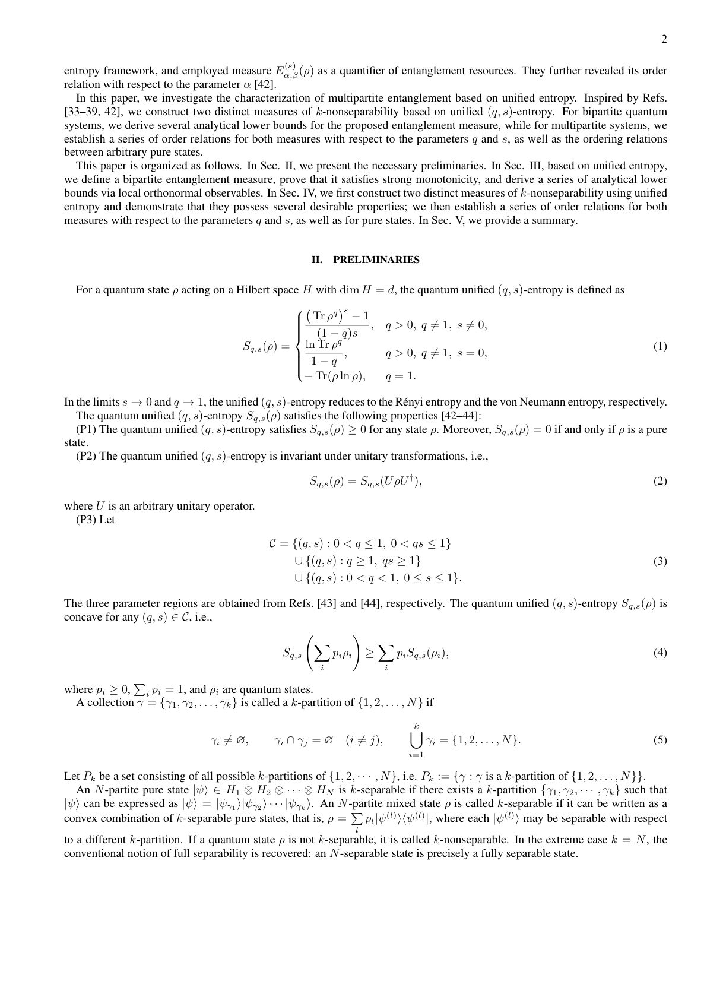
<figcaption class="paper-figure-caption"><b>Fig 1.</b> Low-resolution page preview, page 2</figcaption>
</figure>
<figure class="paper-figure-card">
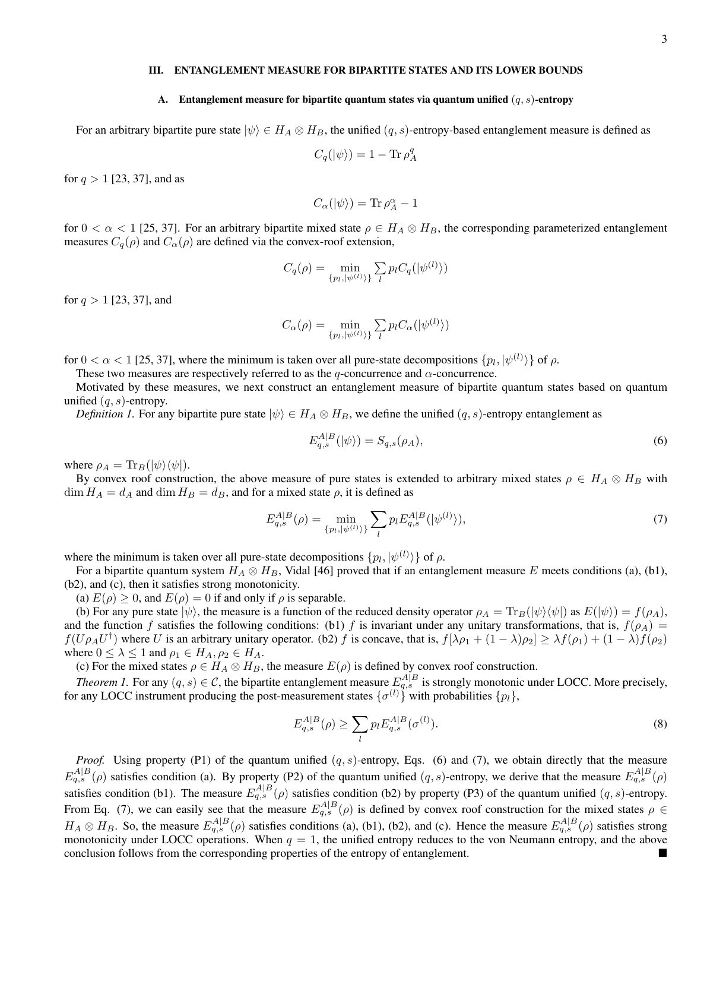
<figcaption class="paper-figure-caption"><b>Fig 2.</b> Low-resolution page preview, page 3</figcaption>
</figure>
<figure class="paper-figure-card">
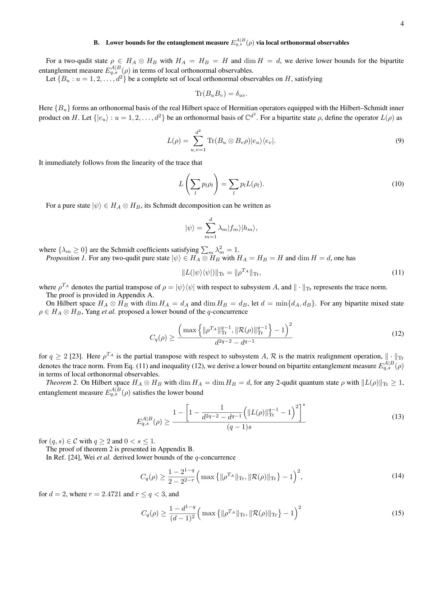
<figcaption class="paper-figure-caption"><b>Fig 3.</b> Low-resolution page preview, page 4</figcaption>
</figure>
<figure class="paper-figure-card">
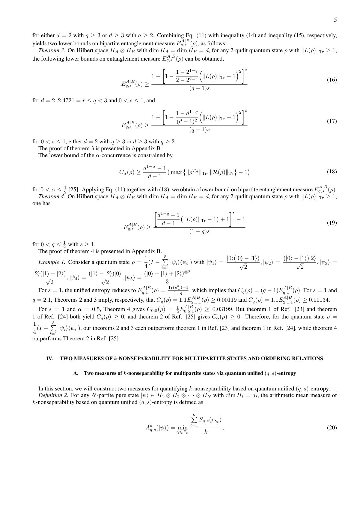
<figcaption class="paper-figure-caption"><b>Fig 4.</b> Low-resolution page preview, page 5</figcaption>
</figure>
<figure class="paper-figure-card">
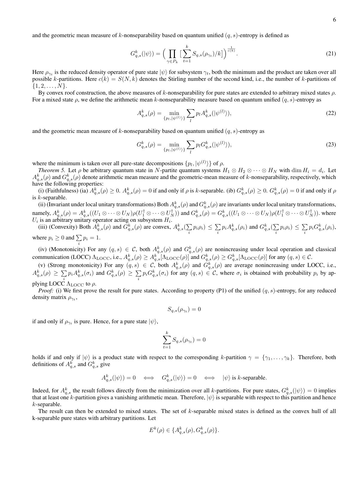
<figcaption class="paper-figure-caption"><b>Fig 5.</b> Low-resolution page preview, page 6</figcaption>
</figure>
</div>
<p><strong>Summary.</strong> This paper introduces a novel approach to quantifying multipartite entanglement using the unified $(q, s)$-entropy framework. It develops specific measures for $k$-nonseparability, proving they possess key desirable properties like monotonicity under LOCC. The work provides tighter analytical bounds for bipartite entanglement and establishes order relations between the proposed measures.</p>
<p><strong>Why it may be interesting.</strong> The rigorous mathematical framework connecting generalized entropy measures to quantifiable entanglement monotones is highly relevant for understanding resource theories in quantum information.</p>
<details>
<summary>Detailed structure</summary>
<p><strong>Main problem.</strong> The paper aims to develop and quantify measures for multipartite entanglement in quantum states.</p>
<p><strong>Main result.</strong> It proposes and analyzes two new measures, $A_k^{q,s}(
ho)$ and $G_k^{q,s}(
ho)$, which are shown to satisfy desirable properties like faithfulness and local unitary invariance, and establishes their strong monotonicity under LOCC.</p>
<p><strong>Method.</strong> The methodology centers on utilizing the unified $(q, s)$-entropy framework to construct entanglement measures for both bipartite and multipartite systems, extending results to mixed states via the convex roof construction.</p>
<p><strong>Model / system.</strong> The study concerns general quantum states ($
ho$) in $N$-partite systems, applicable to both bipartite ($\mathcal{H}_A \otimes \mathcal{H}_B$) and multipartite settings. The analysis is general and does not specify a particular physical Hamiltonian or platform.</p>
<p><strong>Key observables.</strong> Bipartite entanglement measure $E_{A|B}^{q,s}(
ho)$, and multipartite $k$-nonseparability measures $A_k^{q,s}(
ho)$ and $G_k^{q,s}(
ho)$.</p>
<p><strong>Important parameters / regimes.</strong> The parameters $q$ and $s$ defining the unified entropy, and the number of parties $k$.</p>
<p><strong>Assumptions / limitations.</strong> The derivation of strong monotonicity relies on the properties (P1)-(P3) of the unified $(q, s)$-entropy and the use of the convex-roof extension for mixed states.</p>
<p><strong>Paper structure.</strong> The paper first introduces the unified $(q, s)$-entropy, then develops the bipartite entanglement measure $E_{A|B}^{q,s}(
ho)$ with associated lower bounds, and finally generalizes these concepts to propose and analyze the multipartite $k$-nonseparability measures $A_k^{q,s}(
ho)$ and $G_k^{q,s}(
ho)$.</p>
</details>
<details>
<summary>Abstract</summary>
<p>In this paper, we investigate the characterization of multipartite entanglement based on the unified $(q,s)$-entropy framework. For bipartite quantum states, we propose an entanglement measure $E_{q,s}^{A|B}(ρ)$ based on unified entropy and derive several analytical lower bounds for it using local orthonormal observables. We demonstrate with concrete examples that our lower bounds provide tighter estimates of quantum entanglement than several existing analytical bounds. For multipartite quantum states, based on unified entropy, we propose two measures $A^k_{q,s}(ρ)$ and $G^k_{q,s}(ρ)$ for quantifying $k$-nonseparability, and prove that these measures satisfy several desirable properties, such as faithfulness, local unitary invariance, and convexity. Moreover, we rigorously prove that when the parameters $q$ and $s$ are in certain ranges, $A^k_{q,s}(ρ)$ and $G^k_{q,s}(ρ)$ also satisfy monotonicity and strong monotonicity. Furthermore, we establish the order relations of the measures $A^k_{q,s}(ρ)$ and $G^k_{q,s}(ρ)$ with respect to the parameters $q$ and $s$ for fixed quantum states. In addition, for fixed $q$ and $s$, we also give their order relations for any two pure states.</p>
</details>
<p><sub><a href="#top">↑ back to top</a></sub></p>

<p><a id="paper-2608.22017"></a></p>
<h3 id="quantifying-nonstabilizerness-of-codeword-stabilized-codes"><a href="http://arxiv.org/abs/2608.22017v1">Quantifying Nonstabilizerness of Codeword-Stabilized Codes</a></h3>
<p><strong>Authors:</strong> Yuan Liu, Ke-Mi Xu<br>
<strong>Type:</strong> theory · <strong>Category:</strong> quantum information and computing · <strong>PDF:</strong> <a href="https://arxiv.org/pdf/2608.22017v1">https://arxiv.org/pdf/2608.22017v1</a><br>
<strong>Analysis basis:</strong> full PDF text, analyzed in chunks</p>
<div class="figure-strip-hint">↔ Scroll figures horizontally</div>
<div class="paper-figures-scroll">
<figure class="paper-figure-card">
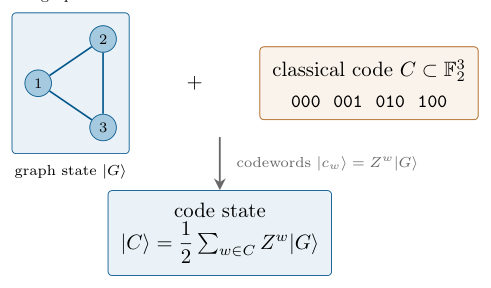
<figcaption class="paper-figure-caption"><b>Fig 1.</b> FIG. 1. A CWS code is specified by a graph G and a classical code C (Here C ⊂F3 2 is shown); the code state |C⟩= 2−k/2 P</figcaption>
</figure>
<figure class="paper-figure-card">
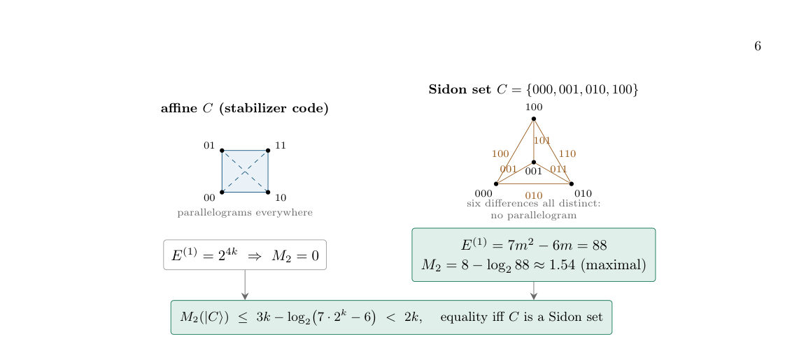
<figcaption class="paper-figure-caption"><b>Fig 2.</b> FIG. 2. Extremes. Left: affine C is a stabilizer code; the whole set is an affine 2-plane, so parallelograms are everywhere, E(1) = 24k, and M2 = 0. Right: the Sidon set C = {000, 001, 010, 100} ⊂F3 2; its six pairwise differences are all distinct, so A(x) ∈{0, 2} and C contains no parallelogram, giving E(1) = 7m2 −6m = 88 and M2 = 8 −log2 88 ≈1.54. Sidon sets attain the universal bound M2 ≤3k −log2(7 · 2k −6) &lt; 2k.</figcaption>
</figure>
</div>
<p><strong>Summary.</strong> This paper develops a quantitative theory to measure the 'nonstabilizerness' of quantum error-correcting codes, which quantifies their ability to support non-Clifford quantum gates. It achieves this by mapping the quantum resource to a classical combinatorial problem involving the collision structure of the code's codewords. The main result shows that the most 'magical' codes are those whose structure resembles Sidon sets, turning the search for quantum resources into a classical counting problem.</p>
<p><strong>Why it may be interesting.</strong> This work provides a powerful, purely mathematical tool (additive combinatorics) to quantify a fundamental resource ('magic') required for building fault-tolerant quantum computers, bridging quantum information theory and number theory.</p>
<details>
<summary>Detailed structure</summary>
<p><strong>Main problem.</strong> The paper develops a quantitative theory for the 'nonstabilizerness' (or 'magic') carried by Codeword-Stabilized (CWS) codes, which is necessary because stabilizer codes cannot provide transversal non-Clifford gates for fault-tolerant quantum computation.</p>
<p><strong>Main result.</strong> The nonstabilizerness is shown to be determined by classical additive combinatorics, specifically related to how codewords collide under translation. The maximum magic is achieved by Sidon sets, and the search for magic-rich codes is reduced to classical counting problems.</p>
<p><strong>Method.</strong> The authors establish a dictionary relating the quantum nonstabilizerness (measured by the second-order stabilizer Rényi entropy, $M_2$) to the classical parallelogram energy $E^{(1)}(C)$ of the underlying binary code $C$.</p>
<p><strong>Model / system.</strong> The system analyzed is the CWS code, defined by a graph $G$ and a classical binary code $C \subseteq \mathbb{F}_2^n$. The code state is a uniform superposition over the codewords.</p>
<p><strong>Key observables.</strong> Nonstabilizerness ($M_2$), Parallelogram energy ($E^{(1)}(C)$), and the structure of the classical code $C$ (e.g., Sidon sets).</p>
<p><strong>Important parameters / regimes.</strong> The number of logical qubits ($k$), the size of the code ($m=|C|$), and the structure of the graph $G$ (e.g., edge-chromatic number $\chi'(G)$).</p>
<p><strong>Assumptions / limitations.</strong> The analysis relies on the development of a quantitative link between the quantum observable $M_2$ and the classical combinatorial energy $E^{(1)}(C)$.</p>
<p><strong>Figures summary.</strong> Figure 1 illustrates the construction of the CWS code. Other figures/tables mentioned relate to comparing $M_2$ values for different code types (e.g., Sidon sets vs. affine codes).</p>
<p><strong>Paper structure.</strong> The paper first introduces the problem of non-Clifford gates and the need for non-stabilizer codes. It then develops the key dictionary relating $M_2$ to classical energy. Subsequent sections derive bounds, show structural invariances (like coset closure), and apply the results to specific gate requirements.</p>
</details>
<details>
<summary>Abstract</summary>
<p>Fault-tolerant quantum computation requires non-Clifford gates, which stabilizer codes cannot supply transversally. Non-stabilizer codes are the natural place to look for them, yet no quantitative theory of the nonstabilizerness (or magic) carried by such a code has existed. We develop one for codeword-stabilized (CWS) codes and show that the key quantity is classical: a code's nonstabilizerness is fixed by how its codewords collide under translation, a question that belongs to additive combinatorics. We show that the most magical codes are exactly the Sidon sets whenever a Sidon set of the required size exists, whose pairwise differences are all distinct. No code carries more than twice its number of logical qubits of nonstabilizerness however large it is physically. Furthermore, the same reduction gives structural and operational results. Nonstabilizerness is unchanged by coset closure, which yields non-stabilizer codes with arbitrarily many logical qubits and constant nonstabilizerness as the number of logical qubits grows. A diagonal transversal gate with $k$ logic qubits that is non-Clifford on $t$ coordinates forces the code's nonstabilizerness to be at most $2(k-t)$; thus the nonstabilizerness also bounds the non-Clifford gates needed to build the code and the cost of classically simulating it. Finally, entire families become exactly computable, and we obtain closed-form values for the Kerdock codes. Together these results turn the search for magic-rich codes and transversal non-Clifford gates into classical counting problems, which can be approached with standard tools from additive combinatorics.</p>
</details>
<p><sub><a href="#top">↑ back to top</a></sub></p>

<p><a id="paper-2608.23399"></a></p>
<h3 id="quantifying-the-dimensionality-of-multiparticle-entanglement-via-partition-rank"><a href="http://arxiv.org/abs/2608.23399v1">Quantifying the dimensionality of multiparticle entanglement via partition rank</a></h3>
<p><strong>Authors:</strong> Sophia Denker, Ismaël Septembre, Robin Krebs, Otfried Gühne<br>
<strong>Type:</strong> theory · <strong>Category:</strong> quantum information and computing · <strong>PDF:</strong> <a href="https://arxiv.org/pdf/2608.23399v1">https://arxiv.org/pdf/2608.23399v1</a><br>
<strong>Analysis basis:</strong> full PDF text, analyzed in chunks</p>
<div class="figure-strip-hint">↔ Scroll figures horizontally</div>
<div class="paper-figures-scroll">
<figure class="paper-figure-card">
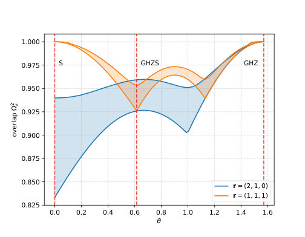
<figcaption class="paper-figure-caption"><b>Fig 1.</b> FIG. 1. Overlap Ω2 r for different parametrizations of the state |ψ⟩= cos(θ)|S⟩+ sin(θ)|GHZ⟩. The upper bounds were com- puted by the PPT relaxation, the lower bounds by the see-saw algorithm. We find that in this case the vector r = (2, 1, 0) includes all permutations.</figcaption>
</figure>
<figure class="paper-figure-card">
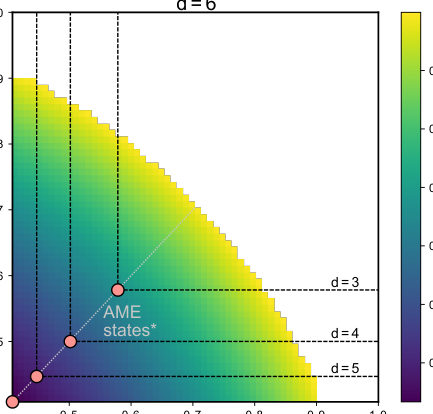
<figcaption class="paper-figure-caption"><b>Fig 2.</b> FIG. 2. Analytical bound for the overlap with slice rank two states depending only on the Schmidt coefficients. The coefficient sAi is the largest Schmidt coefficient of |ψ⟩when considering the cut Ai|rest and analog for Aj. This plot was done for local dimension d = 6, restricting the possible values for the Schmidt coefficients; the black dashed lines show the smaller dimensions d ∈{3, 4, 5}. In the three particle case the orange points correspond to AME states. For the white area, the upper bound is trivial.</figcaption>
</figure>
</div>
<p><strong>Summary.</strong> This paper introduces the 'partition rank' as a generalized measure to quantify the dimensionality of genuine multipartite entanglement in quantum states. By relating this concept to the tensor rank of quantum states, the authors provide a powerful mathematical tool that extends beyond the limitations of two-particle entanglement measures. This advances the theoretical understanding of entanglement resource quantification for complex quantum systems.</p>
<p><strong>Why it may be interesting.</strong> It provides a rigorous, mathematically grounded tool (partition rank) to quantify entanglement complexity in multi-particle systems, which is crucial for understanding resource theories in quantum information.</p>
<details>
<summary>Detailed structure</summary>
<p><strong>Main problem.</strong> The paper addresses the challenge of quantifying the dimensionality of entanglement in multipartite quantum systems, a problem where existing methods are limited beyond two particles.</p>
<p><strong>Main result.</strong> The authors introduce the 'partition rank' as a novel measure to characterize genuine multipartite entanglement dimensionality, establishing that it provides a lower bound on existing measures like the GME-dimension.</p>
<p><strong>Method.</strong> The core method involves defining the partition rank based on the minimum number of product terms required for state decomposition, which is mathematically formulated using tensor rank and slice rank concepts.</p>
<p><strong>Model / system.</strong> The analysis focuses on general pure and mixed multiparticle quantum states, often exemplified by three-qutrit systems, and relates the concept to tensor decomposition theory.</p>
<p><strong>Key observables.</strong> Partition rank ($r_P$), Overlap $\Omega_k^2(\psi)$, and the Partition Rank Vector (PRV).</p>
<p><strong>Important parameters / regimes.</strong> The number of particles (e.g., three-qutrit systems) and the local dimension of the subsystems.</p>
<p><strong>Assumptions / limitations.</strong> The approach generalizes tools from the geometric measure of entanglement and relies on tensor decomposition theory, though numerical stability is noted as a limitation.</p>
<p><strong>Figures summary.</strong> Table I summarizes overlaps ($\Omega_2$) for various states using different computational methods, comparing results for specific entangled states like GHZ and $|S
angle$.</p>
<p><strong>Paper structure.</strong> The paper develops the concept by first introducing the partition rank, then providing constructive methods and mathematical formulations using tensor ranks, and finally applying these tools to calculate overlaps and compare the new measure against established entanglement quantifiers.</p>
</details>
<details>
<summary>Abstract</summary>
<p>The usefulness of entanglement as a resource in quantum technologies increases for larger systems, that is, if more particles or higher-dimensional quantum systems are considered. Yet, the interplay between dimensionality and multiparticle entanglement is not well understood. Only for two-particle systems an unambiguous and coherent notion of entanglement dimensionality, based on the Schmidt decomposition, is known. We introduce a concept to characterize the entanglement dimensionality of multiparticle states based on decompositions of pure states into superpositions of states without genuine multiparticle entanglement. We provide constructive methods to characterize the resulting partition rank for pure and mixed states. This allows the identification of novel maximally correlated states as well as a discrete classification of quantum states under stochastic local operations and classical communication. From a mathematical perspective, our approach can be formulated in terms of the slice rank and partition rank of tensors and our results allow to characterize these by connecting them to a generalized injective tensor norm.</p>
</details>
<p><sub><a href="#top">↑ back to top</a></sub></p>

<p><a id="paper-2608.22475"></a></p>
<h3 id="quantum-inspired-hybrid-neural-networks-for-neural-decoding-a-controlled-ablation-study-of-learnable-quantum-sidecar-integration"><a href="http://arxiv.org/abs/2608.22475v1">Quantum-Inspired Hybrid Neural Networks for Neural Decoding: A Controlled Ablation Study of Learnable Quantum Sidecar Integration</a></h3>
<p><strong>Authors:</strong> Diana Legziel Levy, Menachem Finkelstein, Peter Chin, Eilon Vaadia, Sarel Cohen<br>
<strong>Type:</strong> both · <strong>Category:</strong> disordered systems and neural networks · <strong>PDF:</strong> <a href="https://arxiv.org/pdf/2608.22475v1">https://arxiv.org/pdf/2608.22475v1</a><br>
<strong>Analysis basis:</strong> full PDF text, analyzed in chunks</p>
<div class="figure-strip-hint">↔ Scroll figures horizontally</div>
<div class="paper-figures-scroll">
<figure class="paper-figure-card">
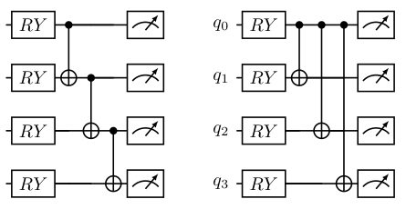
<figcaption class="paper-figure-caption"><b>Fig 1.</b> Figure 1: Circuit topologies (1 of 2 layers shown). Chain: sequential nearest-neighbor CNOTs. Star: qubit 0 as hub with connections to all others.</figcaption>
</figure>
<figure class="paper-figure-card">
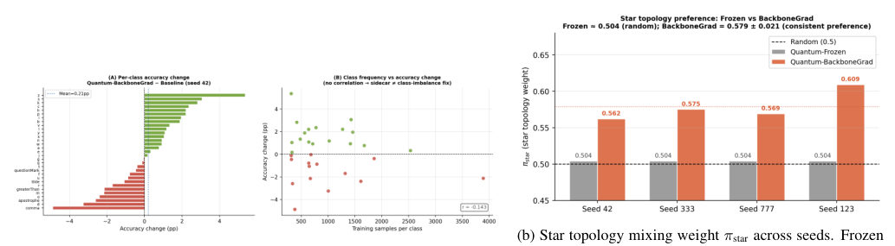
<figcaption class="paper-figure-caption"><b>Fig 2.</b> Figure 2: Left: per-class representation effects are topology-dependent, not frequency-driven. Right: the star-topology prefer- ence is a consistent emergent property of backbone-coupled training.</figcaption>
</figure>
</div>
<p><strong>Summary.</strong> This paper explores using quantum circuits as sidecar modules within a classical neural network for decoding neural activity. The authors find that while the quantum component induces structural reorganization in the learned representations, the overall performance improvement is marginal and ultimately constrained by the limited capacity of the small quantum circuit used.</p>
<p><strong>Why it may be interesting.</strong> The work directly addresses the integration of quantum circuits into machine learning models, providing quantitative diagnostics (CKA, R) to assess if the quantum component induces genuine, measurable structural changes in feature space, which is relevant to understanding quantum feature mapping in complex systems.</p>
<details>
<summary>Detailed structure</summary>
<p><strong>Main problem.</strong> The study investigates whether integrating Parameterized Quantum Circuits (PQCs) as residual sidecar modules into a classical deep neural network can measurably improve the geometric quality of learned representations for complex tasks like neural population decoding.</p>
<p><strong>Main result.</strong> The hybrid model shows evidence of structural reorganization (lower CKA) and a consistent preference for a star-topology, but the overall performance is ultimately limited by the small representational capacity of the 4-qubit quantum circuit.</p>
<p><strong>Method.</strong> The authors employed a systematic ablation study, comparing various quantum-classical coupling strategies (e.g., frozen vs. backbone-gradient-trained projections) on a 31-class classification task.</p>
<p><strong>Model / system.</strong> The system is a hybrid architecture coupling a classical ResNet-50 backbone to a 4-qubit quantum sidecar circuit. Training involves optimizing parameters under controlled conditions using noiseless statevector simulation.</p>
<p><strong>Key observables.</strong> Top-1 accuracy, Linear CKA similarity, Inter/Intra cosine centroid ratio (R), and the latent star-topology mixing weight (pi_star).</p>
<p><strong>Important parameters / regimes.</strong> 4 qubits, 31 classes, noiseless statevector simulation, backbone-gradient training regime.</p>
<p><strong>Assumptions / limitations.</strong> No quantum computational advantage is claimed; the primary limitation is identified as the hard capacity ceiling of the 4-qubit encoding for the given task complexity.</p>
<p><strong>Figures summary.</strong> Figure 2 shows that per-class representation effects are topology-dependent, and the star-topology preference is a consistent emergent property of backbone-coupled training.</p>
<p><strong>Paper structure.</strong> The paper progresses by establishing the hybrid model, comparing multiple training variants (ablation study), quantifying structural changes via geometry metrics (CKA, R), and concluding that capacity constraints limit performance gains.</p>
</details>
<details>
<summary>Abstract</summary>
<p>We study parameterized quantum circuits (PQCs) integrated as residual sidecar modules within a ResNet-50 backbone for 31-class neural population decoding---imagined handwriting classification from multi-neuron spike rasters. Under strictly controlled conditions (fixed data splits, seeds, and optimizer), we compare four model variants: baseline, quantum sidecar with frozen input projection, quantum sidecar with backbone-gradient-trained projection, and a measurement-guided variant that aligns angle encodings with circuit measurement outcomes. The backbone-gradient variant improves accuracy in 3/4 seeds (+0.19% mean, 95% CI [-1.10%, +1.48%]) and consistently reduces Linear CKA similarity to baseline features ($Δ=-0.025$, 4/4 seeds), indicating genuine structural reorganization of representations. A nine-variant ablation identifies simple shallow architectures as the most effective and reproducible configuration. Measurement-guided training consistently improves representation geometry without reducing accuracy. All results use noiseless statevector simulation on 4 qubits, a regime chosen to reflect the practical constraints of current near-term superconducting hardware; no quantum computational advantage over classical methods is claimed.</p>
</details>
<p><sub><a href="#top">↑ back to top</a></sub></p>

<p><a id="paper-2608.22743"></a></p>
<h3 id="role-of-math1192math-electron-density-of-states-in-the-quantum-size-effect-newline-of-pt-ni-and-pt-pd-nanoparticles"><a href="http://arxiv.org/abs/2608.22743v1">Role of $d$-electron density of states in the quantum size effect \newline of Pt-Ni and Pt-Pd nanoparticles</a></h3>
<p><strong>Authors:</strong> S. Kitagawa, T. Ihara, Y. Kinoshita, K. Ishida, K. Kusada, H. Kitagawa<br>
<strong>Type:</strong> experiment · <strong>Category:</strong> strongly correlated electrons · <strong>PDF:</strong> <a href="https://arxiv.org/pdf/2608.22743v1">https://arxiv.org/pdf/2608.22743v1</a><br>
<strong>Analysis basis:</strong> full PDF text, analyzed in chunks</p>
<div class="figure-strip-hint">↔ Scroll figures horizontally</div>
<div class="paper-figures-scroll">
<figure class="paper-figure-card">
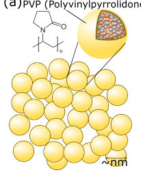
<figcaption class="paper-figure-caption"><b>Fig 1.</b> FIG. 1. (a) Schematic image of Pt1−xXx nanoparticles (X = Pd, and Ni). Nanoparticles are covered by polyvinylpyrroli- done to prevent oxidation and particle-to-particle contact. (b) x dependence of the estimated Sommerfeld coefficient, which is proportional to the density of states at Fermi energy D(EF) in bulk Pt1−xXx alloy [21].</figcaption>
</figure>
<figure class="paper-figure-card">
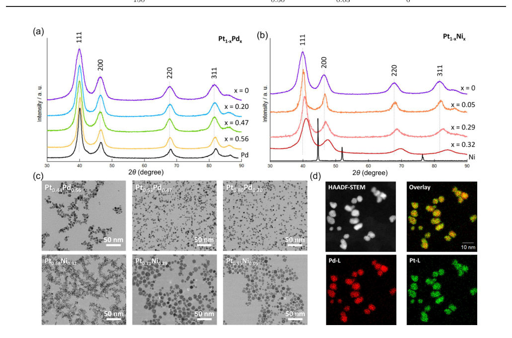
<figcaption class="paper-figure-caption"><b>Fig 2.</b> FIG. 2. Powder X-ray diffraction patterns of (a) Pt1−xPdx and (b) Pt1−xNix using Cu-Kα radiation. (c) TEM images of the synthesized nanoparticles. (d) High-angle annular dark field scanning TEM image of Pt0.53Pd0.47, and the corresponding energy dispersive X-ray maps of Pd-L and Pt-L. The overlay of the Pd-L and Pt-L maps shows the formation of the solid-solution alloy.</figcaption>
</figure>
<figure class="paper-figure-card">
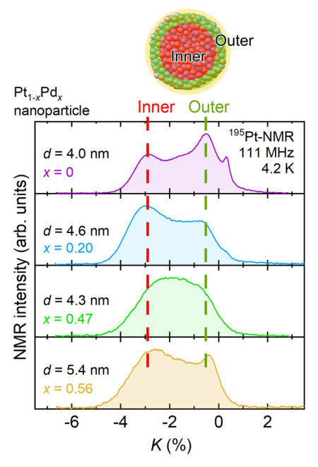
<figcaption class="paper-figure-caption"><b>Fig 3.</b> FIG. 3. 195Pt-NMR spectrum of Pt1−xPdx nanoparticles for various x measured at 4.2 K. The particle size in each x is in- dicated in the panel. For 195Pt-NMR, the two-peak structure originating from the inner and the outer atoms was observed, indicated by the dashed lines. For reference, the data for the monometallic Pt nanoparticles [17] are also presented.</figcaption>
</figure>
<figure class="paper-figure-card">

<figcaption class="paper-figure-caption"><b>Fig 4.</b> Figure 3 shows the 195Pt-NMR spectra at 4.2 K for Pt1−xPdx nanoparticles with various Pd concentrations. The spectrum of monometallic Pt nanoparticles with a 4.0 nm diameter is also shown for comparison. Each spec- trum consists of two distinguishable peaks, attributed to the outer and inner regions of the nanoparticles, respec- tively. The Knight-shift difference between the peaks re- flects the local variation in the electronic density of states D(EF). Compared with the 4 nm Pt nanoparticles, the relative intensity of the outer peak is smaller in Pt1−xPdx samples, suggesting a larger particle size, consistent with the results of transmission electron microscopy. Figures 4(a) and 4(b) show...</figcaption>
</figure>
<figure class="paper-figure-card">
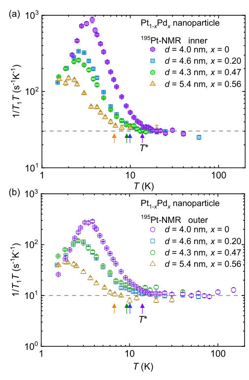
<figcaption class="paper-figure-caption"><b>Fig 5.</b> FIG. 4. Temperature dependence of 1/T1T in the Pt1−xPdx nanoparticles at various x for the (a) inner and (b) outer regions of nanoparticles. The dashed lines indicate a con- stant value at high temperatures. The arrows indicate T ∗, where 1/T1T starts to increase. For reference, the data for the monometallic Pt nanoparticles [17] are also presented.</figcaption>
</figure>
</div>
<p><strong>Summary.</strong> This paper uses $^{195}	ext{Pt}$ NMR to investigate the quantum size effect in $   ext{Pt-Ni}$ and $   ext{Pt-Pd}$ nanoparticles. The key finding is that the QSE is critically dependent on the presence of $d$-electrons, as demonstrated by the contrast between $ ext{Ni}$ and $  ext{Cu}$ alloying. The results confirm that the $d$-electron density of states governs the manifestation of this quantum size effect.</p>
<p><strong>Why it may be interesting.</strong> The work provides experimental evidence linking macroscopic quantum phenomena (QSE) directly to the microscopic electronic structure (d-electron DOS), which is a key area of study in strongly correlated electron systems.</p>
<details>
<summary>Detailed structure</summary>
<p><strong>Main problem.</strong> The study investigates the crucial role of the $d$-electron density of states in determining the manifestation of the quantum size effect (QSE) in bimetallic nanoparticles.</p>
<p><strong>Main result.</strong> The QSE signatures are clearly observed and systematically analyzed in Pt-Ni nanoparticles, while the absence of these signatures in Pt-Cu nanoparticles highlights that $d$-electron participation is essential for the effect.</p>
<p><strong>Method.</strong> The research employs $^{195}	ext{Pt}$ nuclear magnetic resonance (NMR) measurements to probe the temperature and size dependencies of the nuclear spin-lattice relaxation rate ($1/T_1T$).</p>
<p><strong>Model / system.</strong> The physical system consists of bimetallic nanoparticles, specifically $    ext{Pt}<em 1-x>{1-x}   ext{Pd}_x$ and $    ext{Pt}</em>_x$, which are analyzed using NMR spectroscopy to probe electronic structure effects.}   ext{Ni</p>
<p><strong>Key observables.</strong> Nuclear spin-lattice relaxation rate divided by temperature ($1/T_1T$), Knight shift, and the characteristic temperature $T^*$ related to the Kubo gap.</p>
<p><strong>Important parameters / regimes.</strong> Compositional concentration ($x$), particle size ($d$), and the characteristic energy scale $T^*$.</p>
<p><strong>Assumptions / limitations.</strong> The QSE is fundamentally linked to the electronic structure, particularly the $d$-electron density of states at the Fermi level, as evidenced by the comparison with $  ext{Pt}_{1-x}   ext{Cu}_x$.</p>
<p><strong>Figures summary.</strong> Figures illustrate the temperature dependence of $1/T_1T$ for different compositions, showing the characteristic anomaly associated with QSE, and present XRD/TEM data confirming nanoparticle formation.</p>
<p><strong>Paper structure.</strong> The paper systematically compares the QSE behavior in $    ext{Pt}<em 1-x>{1-x}   ext{Pd}_x$ and $    ext{Pt}</em>}   ext{Ni<em 1-x>x$ using NMR, contrasting them with $   ext{Pt}</em>_x$. It analyzes the dependence of the characteristic temperature $T^*$ on composition and size, and concludes by discussing the implications for $d$-electron correlations and magnetic ordering.}   ext{Cu</p>
</details>
<details>
<summary>Abstract</summary>
<p>We investigated the quantum size effect (QSE) in bimetallic Pt$_{1-x}$Pd$_x$ and Pt$_{1-x}$Ni$_x$ nanoparticles, using $^{195}$Pt nuclear magnetic resonance measurements. The temperature and size dependencies of the anomaly in the nuclear spin-lattice relaxation rate divided by temperature $1/T_1T$ in the Pt$_{1-x}$Pd$_x$ nanoparticles suggest similar electron states between Pt and Pd atoms and are well understood by the QSE. The temperature and composition variations of $1/T_1T$ and Knight shift reveal a systematic increase in the density of states and reduction of the characteristic energy scale $T^*$ with increasing Ni content, consistent with the Kubo gap $δ_{\mathrm{Kubo}}$. In contrast to Pt$_{1-x}$Cu$_x$ nanoparticles where the QSE is suppressed, the Pt$_{1-x}$Ni$_x$ nanoparticles exhibit clear signatures of quantum energy discretization. This discrepancy highlights the essential role of $d$-electrons in the manifestation of the QSE. Furthermore, analysis of the modified Korringa parameter $K(α)$ suggests enhanced ferromagnetic correlations with increasing Ni concentration, approaching a ferromagnetic quantum critical regime. These results provide experimental evidence that $d$-electron density of states plays a crucial role in the manifestation of the QSE in the nanoparticles formed by the metallic $d$-electron atoms.</p>
</details>
<p><sub><a href="#top">↑ back to top</a></sub></p>

<p><a id="paper-2608.22308"></a></p>
<h3 id="spanning-trees-in-the-assignment-problem-two-theorems-and-two-conjectures"><a href="http://arxiv.org/abs/2608.22308v1">Spanning trees in the Assignment Problem: two theorems and two conjectures</a></h3>
<p><strong>Authors:</strong> Sergio Caracciolo, Gabriele Sicuro, Andrea Sportiello<br>
<strong>Type:</strong> theory · <strong>Category:</strong> statistical mechanics · <strong>PDF:</strong> <a href="https://arxiv.org/pdf/2608.22308v1">https://arxiv.org/pdf/2608.22308v1</a><br>
<strong>Analysis basis:</strong> full PDF text, analyzed in chunks</p>
<div class="figure-strip-hint">↔ Scroll figures horizontally</div>
<div class="paper-figures-scroll">
<figure class="paper-figure-card">
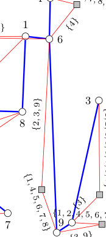
<figcaption class="paper-figure-caption"><b>Fig 1.</b> Figure 1. Example of matching subgraphs H (red) and ¯H (blue). Here n = 8 and Wij = ∥xi−yj∥2. We show the labels of the vertices b ∈B, and the sets C(e). Note that both H and ¯H are spanning trees (respectively on G = Kn+1,n and on ¯G = Kn+1), according to Theorem 3.5, and that, while the tree H is not guaranteed to be non-crossing (because p = 2, instead of p = 1 for Corollary 7.1 to apply), and indeed it is crossing, the tree ¯H is non-crossing, in agreement with Theorem 8.3.</figcaption>
</figure>
<figure class="paper-figure-card">
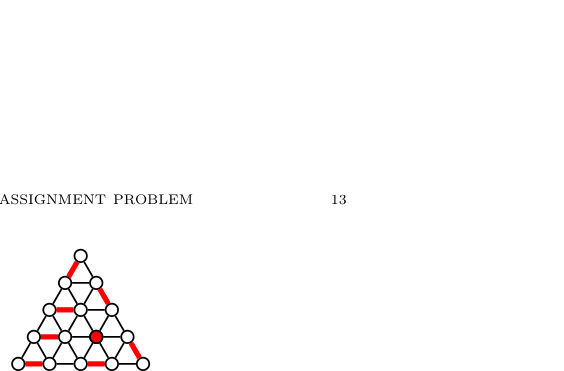
<figcaption class="paper-figure-caption"><b>Fig 2.</b> Figure 4. Examples of graphs that have admissible removals con- sisting of a single vertex. (Left) A square portion of the square lattice of side 5. Even / odd, vertices are shown as circles / squares. Here, all circles are admissible removals. (Right) A triangular por- tion of the triangular lattice of side 5. This graph is in fact tripar- tite, although this property does not play an important role here, and each singleton set in each class is an admissible removal.</figcaption>
</figure>
<figure class="paper-figure-card">
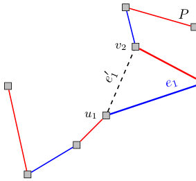
<figcaption class="paper-figure-caption"><b>Fig 3.</b> Figure 5. Illustration of the alternating path and cycles appear- ing in the proof of Lemma 2.10.</figcaption>
</figure>
<figure class="paper-figure-card">
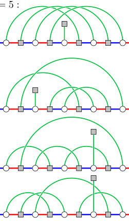
<figcaption class="paper-figure-caption"><b>Fig 4.</b> Figure 7. All 3-Hamiltonian graphs with up to n = 5 A-vertices (circles), and 7 B-vertices (squares).</figcaption>
</figure>
<figure class="paper-figure-card">
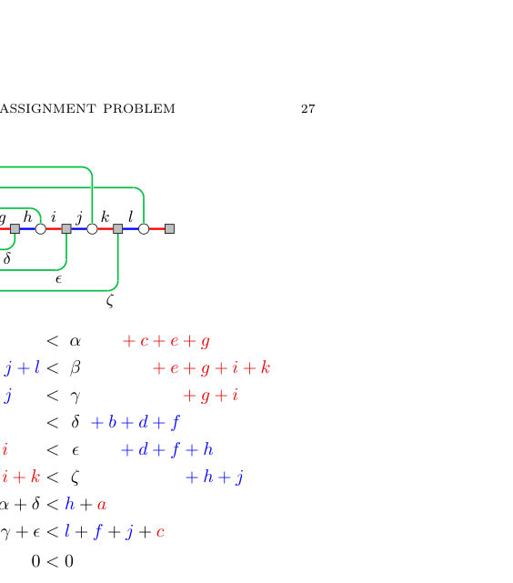
<figcaption class="paper-figure-caption"><b>Fig 5.</b> Figure 8. Illustration of the expression I[w] for our running example.</figcaption>
</figure>
</div>
<p><strong>Summary.</strong> This paper analyzes spanning trees derived from the Assignment Problem using geometric weights based on Euclidean distances. Key results prove that these structures are spanning trees and exhibit non-crossing properties for specific exponents ($p=1, 2$). The work culminates in conjectures linking these random graph structures to established concepts in statistical mechanics, such as Uniform Spanning Trees and $ ext{SLE}_\kappa$ curves.</p>
<p><strong>Why it may be interesting.</strong> While the core is combinatorial optimization, the connection to geometric properties (non-crossing paths) and the explicit link to $ ext{SLE}_\kappa$ places this work at the intersection of statistical mechanics, random geometry, and critical phenomena, which is highly relevant to condensed matter theory.</p>
<details>
<summary>Detailed structure</summary>
<p><strong>Main problem.</strong> The paper investigates the structure of spanning trees derived from the Minimum Matching Problem, particularly when the graph is bipartite (the Assignment Problem). It extends this analysis to geometric settings using Euclidean distances.</p>
<p><strong>Main result.</strong> The authors prove that the constructed graphs $H$ and $ar{H}$ are spanning trees in specific settings, and they establish conditions under which these trees are non-crossing for $p=1$ and $p=2$. Furthermore, they conjecture an asymptotic connection to Uniform Spanning Trees and SLE curves.</p>
<p><strong>Method.</strong> The analysis combines combinatorial optimization (Minimum Matching/Assignment Problem) with geometric probability and continuum limits. Techniques involve analyzing cost matrices derived from Euclidean distances and comparing results on flat versus curved manifolds.</p>
<p><strong>Model / system.</strong> The model centers on finding optimal matchings in weighted graphs where weights are defined by the $p$-th power of Euclidean distances between point configurations in the plane. The context is generalized to random point configurations on planar domains or curved manifolds.</p>
<p><strong>Key observables.</strong> The structure of the resulting graphs ($H$ and $ar{H}$), the non-crossing property of their planar embeddings, and the asymptotic distribution of paths ($   ext{SLE}_\kappa$).</p>
<p><strong>Important parameters / regimes.</strong> The exponent $p$ (especially $p=1$ and $p=2$), the curvature of the manifold ($\eta$), and the density/distribution of the point configurations.</p>
<p><strong>Assumptions / limitations.</strong> The theorems rely on 'suitable generality hypotheses.' The analysis of curved manifolds involves expansions in small parameters ($\eta$ and $  heta$).</p>
<p><strong>Figures summary.</strong> Figure 1 illustrates an example showing that for $p=2$, the projected graph $ar{H}$ is non-crossing, while the direct construction $H$ is crossing.</p>
<p><strong>Paper structure.</strong> The paper establishes foundational theorems regarding the spanning tree nature of $H_{\mathcal{J}}$ and $ar{H}_{\mathcal{J}}$. It then analyzes the geometric properties (non-crossing) for specific distance metrics ($p=1, 2$). Finally, it introduces conjectures concerning the asymptotic behavior of these trees in the Random Euclidean Assignment Problem, linking them to UST and SLE.</p>
</details>
<details>
<summary>Abstract</summary>
<p>The \emph{Minimum Matching Problem} consists of finding an independent edge set of minimum weight $M_{\star}(G)$ in a given edge-weighted graph $G$. When $G$ is bipartite, this reduces to the \emph{Assignment Problem}. We consider a variant of this problem defined by taking the union of optimal matchings across various slightly modified versions of the base graph: $H_{\mathcal{J}}(G)=\bigcup_{U \in \mathcal{J}} M_{\star}(G_{U})$. We establish two families of results: (1) In two distinct settings for the Assignment Problem, we prove that the resulting graphs $H_{\mathcal{J}}$, as well as certain associated graphs $\bar{H}_{\mathcal{J}}$, are spanning trees on the relevant base graphs $G$ and $\bar{G}$. (2) In these same settings, assuming the edge weights are given by the $p$-th power of Euclidean distances for point configurations in the plane, we show that for $p=1$ the tree $H_{\mathcal{J}}$ is non-crossing (i.e., its planar embedding has no crossing edges), whereas, remarkably, for $p=2$ the associated tree $\bar{H}_{\mathcal{J}}$ is non-crossing. Finally, we introduce novel conjectures in Statistical Mechanics, to be explored in future work: in the Random Euclidean Assignment Problem (where points are i.i.d.\ on a planar domain), we conjecture that for $p=2$ the trees $\bar{H}_{\mathcal{J}}$ are asymptotically distributed as Uniform Spanning Trees with free and wired boundary conditions in the two respective settings. In particular, suitable paths on the tree in the second setting, and on its planar dual in the first setting, are asymptotically distributed as $\text{SLE}_κ$ with $κ=2$.</p>
</details>
<p><sub><a href="#top">↑ back to top</a></sub></p>

<p><a id="paper-2608.21752"></a></p>
<h3 id="width-independent-compressibility-of-deep-neural-networks"><a href="http://arxiv.org/abs/2608.21752v1">Width-Independent Compressibility of Deep Neural Networks</a></h3>
<p><strong>Authors:</strong> Hong-Yi Wang, Mingze Wang, Liu Ziyin<br>
<strong>Type:</strong> theory · <strong>Category:</strong> disordered systems and neural networks · <strong>PDF:</strong> <a href="https://arxiv.org/pdf/2608.21752v1">https://arxiv.org/pdf/2608.21752v1</a><br>
<strong>Analysis basis:</strong> full PDF text, analyzed in chunks</p>
<div class="figure-strip-hint">↔ Scroll figures horizontally</div>
<div class="paper-figures-scroll">
<figure class="paper-figure-card">
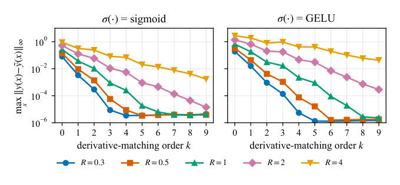
<figcaption class="paper-figure-caption"><b>Fig 1.</b> Figure 1: Single-layer compression error versus derivative-matching order k on a randomly initialized [3, 2048, 2048] network, for sigmoid (left) and GELU (right) activations. Each curve is one input radius R. Both panels exhibit geometric decay in k at every R, with the per-step rate slowing as R grows — the qualitative behavior predicted by the (R/ρ0)k+1 rate of Theorem 6. For R ≤1 the curves saturate at the float32 noise floor (∼10−6) by k ≈5; at k = 9 the error is below 10−5 uniformly in the unit ball for both activations.</figcaption>
</figure>
<figure class="paper-figure-card">
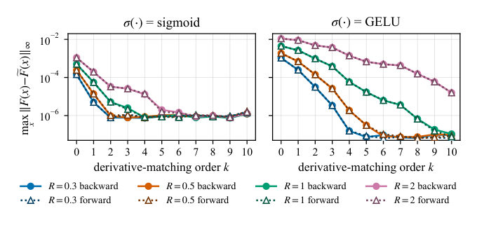
<figcaption class="paper-figure-caption"><b>Fig 2.</b> Figure 2: Composed compression error versus per-step derivative-matching order k on a randomly initialized [2, 1024, 1024, 1024, 1024, 2] network, for sigmoid (left) and GELU (right). Each panel shows eight curves: four input radii R ∈{0.3, 0.5, 1, 2} in four colors, with backward order (compress the deepest hidden layer first) drawn solid with circles and forward order (shallowest first) drawn dotted with triangles. The two orders are essentially indistinguishable at every (k, R). Each compression step reduces its hidden layer to Dk = 2+k 2  ∈{1, 3, 6, . . . , 66} neurons.</figcaption>
</figure>
<figure class="paper-figure-card">
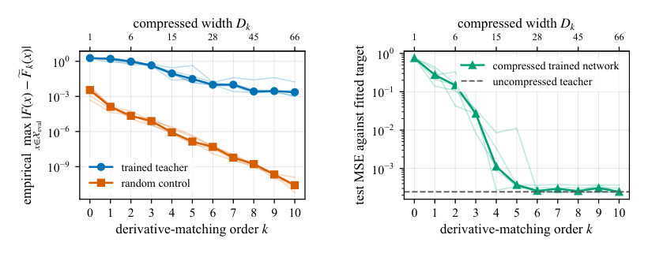
<figcaption class="paper-figure-caption"><b>Fig 3.</b> Figure 3: Compression of all three hidden layers of a trained [2, 512, 512, 512, 1] sigmoid MLP, without fine-tuning. Thin curves are the five seeds and bold curves their medians. Left: empirical maximum teacher– compression discrepancy on the held-out set and projected local searches; frozen random controls are shown for comparison. Right: target MSE, with the median uncompressed-teacher MSE dashed.</figcaption>
</figure>
<figure class="paper-figure-card">
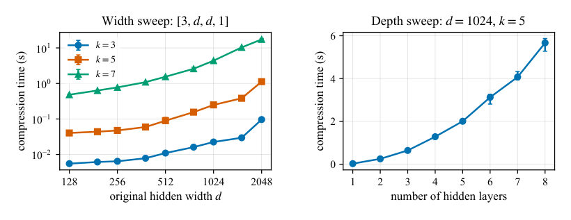
<figcaption class="paper-figure-caption"><b>Fig 4.</b> Figure 4: End-to-end runtime of backward compression with the practical pivoted-QR implementation. The timed region includes derivative-feature evaluation, basis selection, the coefficient solve, weight reconstruction for every hidden layer, and the implementation’s numerical diagnostics; teacher construction and a small library warm-up are excluded. We use randomly initialized float64 sigmoid networks on CPU with one Torch/BLAS thread. Points are medians of three complete compressions and bars span their minima and maxima. Left: teachers [3, d, d, 1] for k = 3, 5, 7. Right: teachers [3, 1024, . . . , 1024, 1] with one through eight hidden layers at k = 5.</figcaption>
</figure>
</div>
<p><strong>Summary.</strong> This paper provides a theoretical guarantee for compressing deep neural networks by showing that the required width to maintain accuracy scales only polylogarithmically with the inverse error budget, independent of the original width. It achieves this using a novel derivative-matching technique applied layer-wise in reverse order. The work establishes a fundamental complexity bound for deep function approximators.</p>
<p><strong>Why it may be interesting.</strong> While focused on classical MLPs, the rigorous mathematical techniques involving functional approximation bounds, complexity scaling with dimension, and the distinction between fixed vs. parameterized systems are highly relevant to understanding the complexity of quantum state representations in neural networks.</p>
<details>
<summary>Detailed structure</summary>
<p><strong>Main problem.</strong> To prove a uniform compressibility theorem for deep multilayer perceptrons (MLPs), demonstrating that a wide teacher network can be approximated by a much narrower network of the same depth.</p>
<p><strong>Main result.</strong> The required retained width for approximation is polylogarithmic in the inverse of the error budget, $O((\log(1/\epsilon))^{d_{in}})$, and is strikingly independent of the original network width.</p>
<p><strong>Method.</strong> The core technique involves a novel derivative-matching procedure that converts finite-order input-derivative matching into a uniform sup-norm bound on a bounded domain.</p>
<p><strong>Model / system.</strong> The model is a deep multilayer perceptron defined by sequential applications of analytic activation functions ($\sigma$) and weight matrices ($W^{(\ell)}$). The analysis focuses on approximating a fixed, trained teacher network function.</p>
<p><strong>Key observables.</strong> Retained width ($d'_\ell$), Approximation error ($\epsilon$), Effective input dimension ($d_{in}$)</p>
<p><strong>Important parameters / regimes.</strong> Error budget ($\epsilon$), Input dimension ($d_{in}$), Depth ($L$)</p>
<p><strong>Assumptions / limitations.</strong> The activations must be analytic (holomorphic extension required), and the analysis is restricted to approximating a fixed teacher network, not general families of networks.</p>
<p><strong>Figures summary.</strong> One table summarizes per-seed diagnostics after backward compression, showing MSE, radius checks, and the first task-preserving dimension $D_k$ for several seeds.</p>
<p><strong>Paper structure.</strong> The paper develops the theory by first establishing per-layer bounds using derivative matching, then extends this to a full deep-network compression via backward layer-wise composition, culminating in the main theorem bounding the final width.</p>
</details>
<details>
<summary>Abstract</summary>
<p>It has long been known that well-trained neural networks can be compressed very strongly without affecting their performance, an important phenomenon that remains poorly understood. We prove a uniform compressibility theorem for deep multilayer perceptrons with analytic activations. For a deep, wide fixed teacher network, there exists a narrow (same depth) network that approximately represents the same function as the original. The reachable compressed width is strikingly independent of the original width, but is $O((\log(1/\varepsilon))^{d_{in}})$, where $\varepsilon$ is the error budget and $d_{in}$ is the effective input dimension. Our construction involves a novel derivative-matching technique which is aware of the low-dimensional input, and a layer-wise reweighting that preserves the input-output mapping.</p>
</details>
<p><sub><a href="#top">↑ back to top</a></sub></p>
</details>
<h2 id="secondary-cond-mat-archives">Secondary cond-mat archives</h2>
<p><em>Papers from cond-mat.mtrl-sci, mes-hall, other, soft, supr-con. These archives are de-prioritized — they appear at the end regardless of relevance score.</em></p>
<h3 id="relevant-in-secondary-archives-27">Relevant in secondary archives (27)</h3>

<p><a id="paper-2608.23403"></a></p>
<h3 id="the-principle-of-detailed-balance-between-electrons-and-phonons-in-presence-of-excitonic-effects"><a href="http://arxiv.org/abs/2608.23403v1">The principle of detailed balance between electrons and phonons in presence of excitonic effects</a></h3>
<p><strong>Authors:</strong> Alberto Guandalini, Giovanni Caldarelli, Francesco Mauri, Francesco Macheda<br>
<strong>Type:</strong> theory · <strong>Category:</strong> statistical mechanics · <strong>PDF:</strong> <a href="https://arxiv.org/pdf/2608.23403v1">https://arxiv.org/pdf/2608.23403v1</a><br>
<strong>Analysis basis:</strong> full PDF text, analyzed in chunks
<strong>Topic relevance:</strong> 🔥 <code>Keldysh / 2PI / non-Gaussian methods</code> <strong>4/5</strong> · <code>correlated / nonlocal dissipation</code> <strong>3/5</strong> · <code>driven-dissipative phase transition</code> <strong>2/5</strong> · <code>methods for driven-dissipative</code> <strong>2/5</strong> · <code>non-equilibrium universality</code> <strong>2/5</strong> · <code>analog quantum simulation</code> <strong>1/5</strong></p>
<div class="figure-strip-hint">↔ Scroll figures horizontally</div>
<div class="paper-figures-scroll">
<figure class="paper-figure-card">
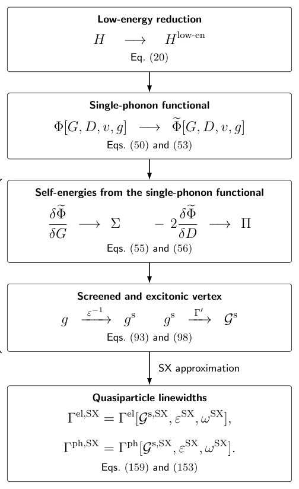
<figcaption class="paper-figure-caption"><b>Fig 1.</b> FIG. 1: Workflow of the theoretical construction. The microscopic Hamiltonian is reduced to the low-energy model and used to define the single-phonon functional. Its functional derivatives generate the electronic and phononic self-energies. Screening and electron-hole ladder corrections produce, in turn, the dressed vertices gs and Gs. In the screened-exchange quasiparticle approximation and static-vertex limit, the electronic and phononic linewidths depend on the same vertex, electronic energies, and phonon frequencies.</figcaption>
</figure>
<figure class="paper-figure-card">
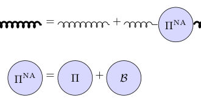
<figcaption class="paper-figure-caption"><b>Fig 2.</b> FIG. 3: Dyson’s equation for the phonon propagator and decomposition of the nonadiabatic phonon self-energy, Eqs. (48) and (49).</figcaption>
</figure>
<figure class="paper-figure-card">
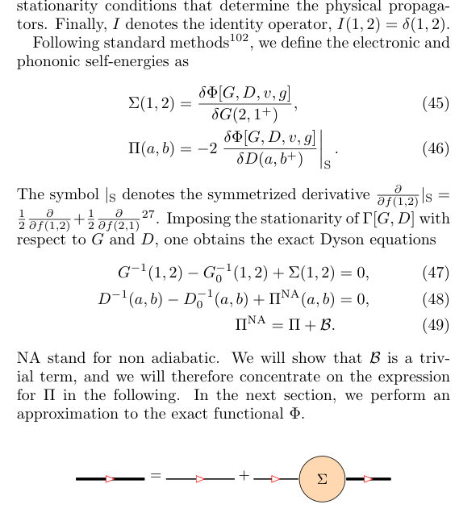
<figcaption class="paper-figure-caption"><b>Fig 3.</b> FIG. 2: Dyson’s equation for the electronic Green’s function, Eq. (47).</figcaption>
</figure>
<figure class="paper-figure-card">
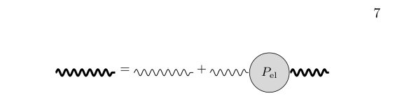
<figcaption class="paper-figure-caption"><b>Fig 4.</b> FIG. 4: Dyson equation for the screened electronic interaction Wel, Eq. (59).</figcaption>
</figure>
<figure class="paper-figure-card">
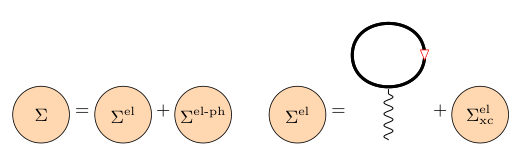
<figcaption class="paper-figure-caption"><b>Fig 5.</b> FIG. 5: Electronic self-energy splitting, Eqs. (60) and (61).</figcaption>
</figure>
</div>

<p><strong>Summary.</strong> This paper develops a many-body theory to calculate electron-phonon coupling while ensuring thermodynamic detailed balance, even when excitonic effects are present. By deriving both electronic and phononic self-energies from a single effective action using a generalized vertex, the authors provide a consistent framework for calculating scattering rates. This is demonstrated in graphene, showing how excitonic effects can maintain linewidths despite band structure modifications.</p>
<p><strong>Why it may be interesting.</strong> The rigorous enforcement of detailed balance in calculating scattering rates is crucial for accurate non-equilibrium dynamics, which is highly relevant for understanding energy dissipation in quantum devices and materials.</p>
<details>
<summary>Detailed structure</summary>
<p><strong>Main problem.</strong> The primary goal is to derive an electron-phonon coupling formulation that rigorously preserves the principle of thermodynamic detailed balance when excitonic effects are included in the many-body description.</p>
<p><strong>Main result.</strong> The derived framework successfully ensures detailed balance by using a common, excitonic-enhanced vertex ($\mathcal{G}^{	extrm{s}}$) for both electronic and phononic self-energies, which can compensate for phase-space reductions in linewidths.</p>
<p><strong>Method.</strong> The authors employ a many-body formulation starting from the microscopic Hamiltonian, constructing an effective action, and deriving coupled electronic and phononic self-energies via diagrammatic techniques.</p>
<p><strong>Model / system.</strong> The study focuses on electron-phonon interactions in condensed matter systems, with a specific application to graphene. The theory utilizes the Born-Oppenheimer approximation and incorporates excitonic effects via a nonlocal vertex generalization.</p>
<p><strong>Key observables.</strong> Electronic and phononic linewidths ($\Gamma_{el}, \Gamma_{ph}$), electronic and phononic self-energies ($\Sigma, \Pi_U$), and the effective action $\Gamma[G, D]$.</p>
<p><strong>Important parameters / regimes.</strong> Screened-exchange approximation, static limit of the vertex, and the temperature ($T=300	ext{K}$ for final calculations).</p>
<p><strong>Assumptions / limitations.</strong> The approach assumes that electron-hole correlations can be mapped onto interaction vertices, and approximations are made regarding the reference equilibrium geometry and residual double-counting terms in DFT calculations.</p>
<p><strong>Figures summary.</strong> Figures illustrate the workflow from the Hamiltonian to self-energies and linewidths, and compare phonon frequencies calculated using static versus dynamical electron-phonon vertices.</p>
<p><strong>Paper structure.</strong> The paper develops the theory by first establishing the low-energy Hamiltonian via the Born-Oppenheimer approximation, then constructing the effective action, deriving the self-energies via Dyson equations, and finally applying the formalism to calculate linewidths in graphene.</p>
</details>
<details>
<summary>Abstract</summary>
<p>Based on a many-body formulation, we derive an electron-phonon coupling including excitonic effects that preserves thermodynamic detailed balance between electronic and phononic scattering processes. We start from the microscopic electron-nucleus Hamiltonian, expand around the Born-Oppenheimer equilibrium geometry, and construct an effective action for the electronic and phononic propagators. From the same effective action, we derive both electronic and phononic self-energies in terms of a nonlocal vertex $\mathcal G^{\textrm{s}}$ including excitonic effects, which generalizes the usual local interaction vertex $g^{\textrm{s}}$. When electrons and phonons are well-defined quasiparticles in the screened-exchange approximation and $\mathcal G^{\textrm{s}}$ is taken in its static limit, both self-energies reduce to Fermi-golden-rule expressions containing the same $\mathcal G^{\textrm{s}}$, thereby ensuring detailed balance. As an application, we compute electronic and phononic linewidths in graphene and illustrate this common-vertex construction. We analyze the competition between the reduced scattering phase space induced by the screened-exchange band structure and the enhancement of the electron-phonon vertex due to excitonic effects, finding that the vertex enhancement can compensate for and overcome the phase-space reduction in both electronic and phononic linewidths.</p>
</details>
<p><sub><a href="#top">↑ back to top</a></sub></p>

<p><a id="paper-2608.23246"></a></p>
<h3 id="enhanced-intrinsic-spin-orbit-driving-of-a-loss-divincenzo-qubit-near-the-spin-valley-hotspot-in-sisige"><a href="http://arxiv.org/abs/2608.23246v1">Enhanced intrinsic spin-orbit driving of a Loss-DiVincenzo qubit near the spin-valley hotspot in Si/SiGe</a></h3>
<p><strong>Authors:</strong> Alexander Willmes, Max Oberländer, Max Beer, Denny Dütz, Jhih-Sian Tu, Stefan Trellenkamp, Marco Lisker, Felix Reichmann, Lars R. Schreiber, Hendrik Bluhm<br>
<strong>Type:</strong> experiment · <strong>Category:</strong> quantum information and computing · <strong>PDF:</strong> <a href="https://arxiv.org/pdf/2608.23246v1">https://arxiv.org/pdf/2608.23246v1</a><br>
<strong>Analysis basis:</strong> full PDF text, analyzed in chunks
<strong>Topic relevance:</strong> 🔥 <code>QC/QI experiment</code> <strong>4/5</strong> · <code>quantum measurements</code> <strong>2/5</strong> · <code>analog quantum simulation</code> <strong>1/5</strong></p>
<div class="figure-strip-hint">↔ Scroll figures horizontally</div>
<div class="paper-figures-scroll">
<figure class="paper-figure-card">
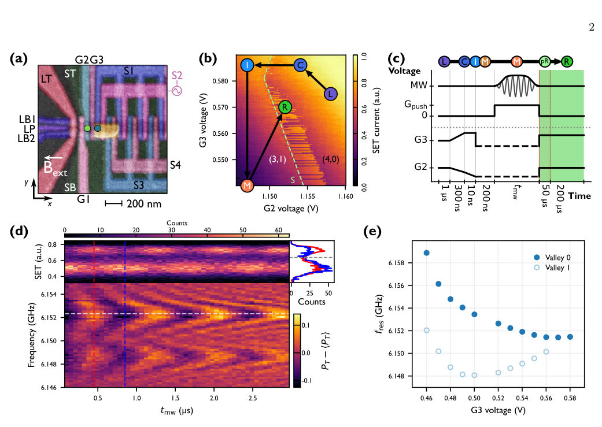
<figcaption class="paper-figure-caption"><b>Fig 1.</b> FIG. 1. (a) False-colored scanning electron microscopy image of a nominally identical device where the green (blue) dot indicates the position of the left (right) quantum dot. A cobalt nanomagnet (amber rectangle) was evaporated on top of the gate stack but was found not to produce a detectable magnetic field (see main text). A microwave source is connected to gate set S2 for driving EDSR in the right dot. An external magnetic field Bext is applied in-plane along the channel. (b) Charge stability diagram of the closed system in the (3,1)-(4,0) regime, obtained by pulsing the interdot barrier and the plunger gate of the first dot; (L,R) denotes electron occupancies of left and right dots....</figcaption>
</figure>
<figure class="paper-figure-card">
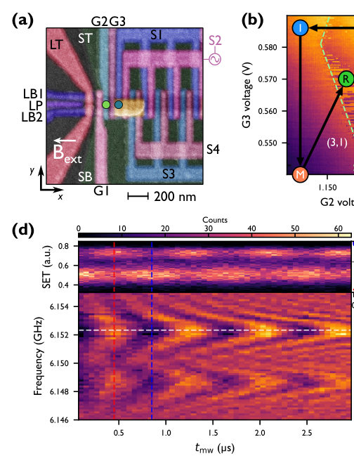
<figcaption class="paper-figure-caption"><b>Fig 2.</b> Figure 1(a) shows a scanning electron micrograph of a nominally identical device. The device, which is similar</figcaption>
</figure>
<figure class="paper-figure-card">
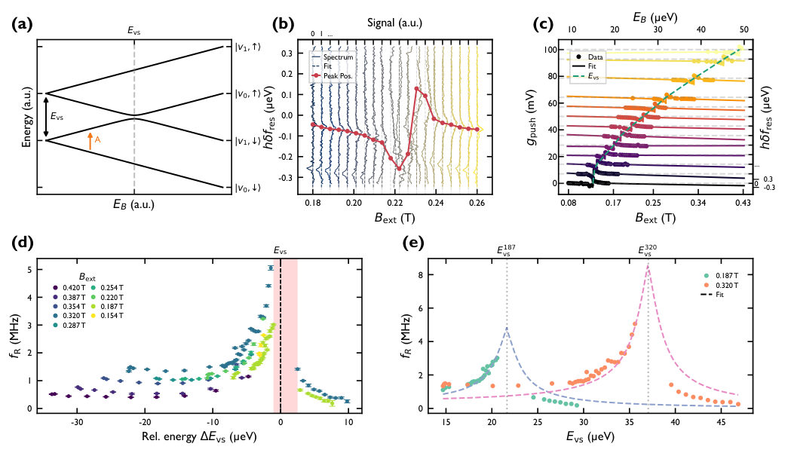
<figcaption class="paper-figure-caption"><b>Fig 3.</b> FIG. 2. (a) Energy level diagram of an electron with two valley states split by Evs as a function of Zeeman splitting EB. The spin-valley hotspot is located at EB = Evs. Arrow A indicates the transition driven when the qubit is initialized in the |v0, ↓⟩ state. (b) Qubit spectra and resonance extraction for various external magnetic fields at gpush = 50 mV. Each trace (top axis) shows the normalized SET signal as the microwave frequency is swept around the expected resonance, hδfres = hfres −gµBBext (left axis), at fixed burst time tmw. A second (negative) peak at lower frequencies results from the subtraction of a frequency- detuned reference pulse. The extracted peak positions from...</figcaption>
</figure>
<figure class="paper-figure-card">
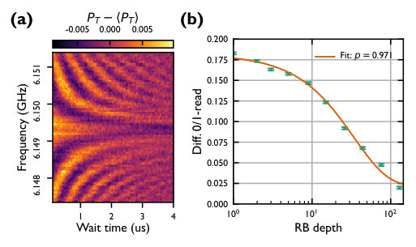
<figcaption class="paper-figure-caption"><b>Fig 4.</b> FIG. 3. Qubit characterization at Bext = 220 mT, tuned away from the hotspot with EB &gt; Evs. (a) Ramsey exper- iment at the same electrostatic configuration used for ran- domized benchmarking in (b). Fitting decaying oscillations (Eq. (B1)) to the Ramsey pattern yields a median T ∗ 2 = 2.3 µs. In general, the measured T ∗ 2 -values are strongly position- dependent (see Appendix D). (b) Randomized benchmarking (RB) following AllXY calibration.</figcaption>
</figure>
</div>

<p><strong>Summary.</strong> This experimental work investigates using intrinsic spin-orbit coupling in Si/SiGe qubits to achieve high-fidelity quantum gates near a predicted spin-valley hotspot. While the enhanced Rabi frequency was observed, the study also revealed significant asymmetries and variability, indicating that while the mechanism is confirmed, its practical implementation faces challenges for scalable control.</p>
<p><strong>Why it may be interesting.</strong> This work provides crucial empirical data on utilizing intrinsic material couplings (i-SOC) for qubit control, directly addressing the feasibility of solid-state quantum computing platforms beyond traditional magnetic control.</p>
<details>
<summary>Detailed structure</summary>
<p><strong>Main problem.</strong> The study aims to demonstrate and characterize the enhanced intrinsic spin-orbit coupling (i-SOC) driving of a Loss-DiVincenzo qubit near a predicted spin-valley hotspot in Si/SiGe heterostructures.</p>
<p><strong>Main result.</strong> The researchers observed the predicted enhancement of the Rabi frequency near the hotspot, but also found significant asymmetries and variability, suggesting that i-SOC control is not yet a scalable strategy.</p>
<p><strong>Method.</strong> The experiment uses microwave pulse sequences and Rabi measurements to probe the qubit dynamics, varying parameters like magnetic field and quantum dot position to map the energy detuning from the hotspot.</p>
<p><strong>Model / system.</strong> The system is a spin qubit implemented in a Si/SiGe heterostructure, utilizing the spin-valley coupling mechanism. The physics is governed by the interplay between Zeeman splitting and valley splitting, leading to the 'hotspot' where hybridization occurs.</p>
<p><strong>Key observables.</strong> Rabi frequency ($\Omega_R$), single-qubit Clifford fidelity ($F$), Chevron patterns, and the dependence of resonance frequency on energy detuning ($\Delta E_v$).</p>
<p><strong>Important parameters / regimes.</strong> The hotspot condition ($\Delta E_v = 0$), the measured spin-valley coupling strength ($|C| \approx 0.75 \mu	ext{eV}$), and the achieved fidelity ($F \approx 98.6\%$).</p>
<p><strong>Assumptions / limitations.</strong> The analysis assumes that the observed phenomena are dominated by i-SOC effects near the hotspot, although the variability suggests other noise sources (like nuclear spins) might be at play.</p>
<p><strong>Figures summary.</strong> Figures detail Rabi experiments showing Chevron patterns, energy diagrams mapping the anticrossing, and plots showing the Rabi frequency dependence on detuning, alongside coherence time ($T_2^*$) vs. detuning.</p>
<p><strong>Paper structure.</strong> The paper progresses from characterizing the basic qubit operation and observing the predicted Rabi enhancement at the hotspot, to detailing the observed asymmetries and limitations, and finally analyzing coherence time and noise susceptibility to constrain theoretical models.</p>
</details>
<details>
<summary>Abstract</summary>
<p>In most Si/SiGe-based spin qubit implementations, high-fidelity single-qubit gates are achieved using micromagnets, which enable the use of electric spin dipole resonance via synthetic spin-orbit coupling (s-SOC). In contrast, intrinsic spin-orbit coupling (i-SOC) in silicon is generally considered to be weak. However, in Si/SiGe heterostructures, theory predicts a substantial enhancement when the Zeeman splitting approaches the valley splitting if symmetry is reduced by an imperfect interface. Here, we demonstrate a Si/SiGe Loss-DiVincenzo qubit driven by i-SOC close to this so-called spin-valley hotspot. In particular, we characterize the Rabi frequency as a function of the energy detuning from the hotspot by sweeping both the magnetic field and quantum dot position. We observe the predicted enhancement of the Rabi frequency near the hotspot, but also find an asymmetry that deviates from existing theoretical models as well as distortions of the Chevron patterns near the hotspot. While we achieve an average single-qubit Clifford fidelity of 98.6 %, the strong variability of the valley splitting may impede the use of i-SOC-based control as a scalable operational strategy; understanding its effect is nevertheless important for reproducible high-fidelity control. Our results provide an empirical basis for refining current theoretical models of spin-valley physics in Si/SiGe heterostructures.</p>
</details>
<p><sub><a href="#top">↑ back to top</a></sub></p>

<p><a id="paper-2608.21728"></a></p>
<h3 id="propagating-fronts-of-convection-rolls-in-rayleigh-benard-convection"><a href="http://arxiv.org/abs/2608.21728v1">Propagating fronts of convection rolls in Rayleigh-Bénard convection</a></h3>
<p><strong>Authors:</strong> Saikat Mukherjee, Mark Paul<br>
<strong>Type:</strong> both · <strong>Category:</strong> statistical mechanics · <strong>PDF:</strong> <a href="https://arxiv.org/pdf/2608.21728v1">https://arxiv.org/pdf/2608.21728v1</a><br>
<strong>Analysis basis:</strong> full PDF text, analyzed in chunks
<strong>Topic relevance:</strong> 🔥 <code>non-equilibrium universality</code> <strong>4/5</strong> · <code>Frenkel-Kontorova</code> <strong>1/5</strong> · <code>analog quantum simulation</code> <strong>1/5</strong> · <code>driven-dissipative phase transition</code> <strong>1/5</strong></p>
<div class="figure-strip-hint">↔ Scroll figures horizontally</div>
<div class="paper-figures-scroll">
<figure class="paper-figure-card">
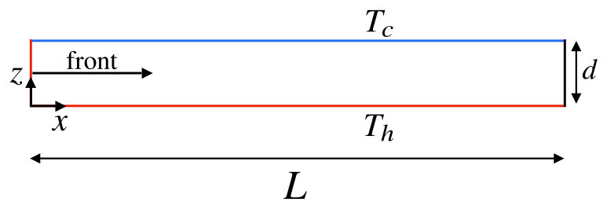
<figcaption class="paper-figure-caption"><b>Fig 1.</b> Figure 1: 2D domain used to study the propagation of fronts of straight parallel rolls. A fluid layer of length L and depth d with a hot bottom wall at Th (red) and cold top wall at Tc (blue) where Th &gt; Tc. The front is initiated using a hot wall located as x = 0 (red) and propagates from left to right. The aspect ratios Γ = L/d used in the simulations are Γ = 30 and 60. Gravity opposes the z-direction.</figcaption>
</figure>
<figure class="paper-figure-card">
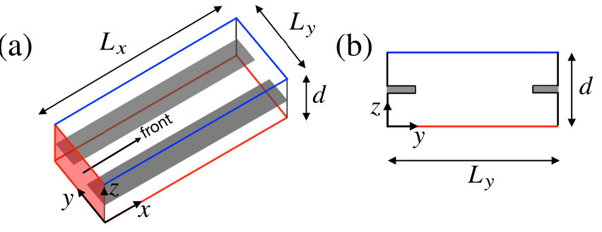
<figcaption class="paper-figure-caption"><b>Fig 2.</b> Figure 2: A box domain with fins attached to the sidewalls. (a) A fluid layer of depth d with a rectangular cross section of lengths Lx and Ly in the x and y directions, respectively to yield Γx = Lx/d and Γy = Ly/d. The bottom wall is hot (red) and the top wall is cold (blue). Thin fins are attached to the sidewalls (shown in gray). The front is initiated at the wall located at x=0 (red) and propagates in the positive x-direction. (b) A y–z cross-section highlighting the fin geometry. The fins are no-slip surfaces of finite thickness in the y and z-directions and are perfect thermal conductors. We also use a box domain without fins (not shown) which is this domain with the gray fins removed....</figcaption>
</figure>
<figure class="paper-figure-card">
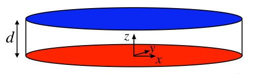
<figcaption class="paper-figure-caption"><b>Fig 3.</b> Figure 3: Cylindrical domain used to study the propagation of concentric convection rolls. A fluid layer of depth d, radius r0, and aspect ratio Γ=r0/d with a hot bottom wall (red) at Th and cold top wall (blue) at Tc. All material boundaries are no-slip surfaces. The front is initiated at the origin by introducing a thermal perturbation at t=0. The front on concentric convection rolls propagates radially outward from the origin toward the sidewalls. Gravity opposes the z-direction and in our study Γ=40.</figcaption>
</figure>
<figure class="paper-figure-card">
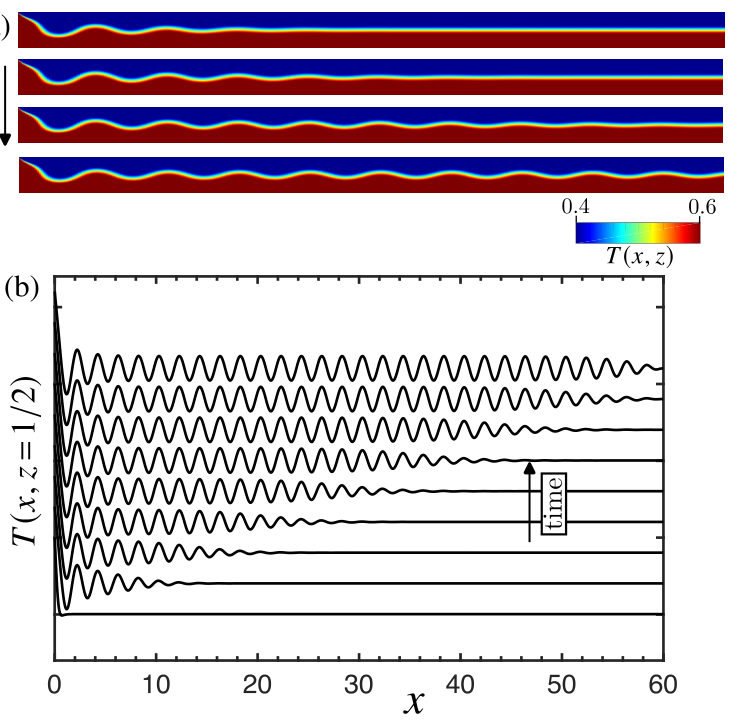
<figcaption class="paper-figure-caption"><b>Fig 4.</b> Figure 4: The temperature variation of a fluid layer containing a front in a 2D domain forming a chain of counter-rotating convection rolls. Simulation parameters: Sim. 1, Γ=60, Ra=1745, Pr=1. (a) Color contours of T(x, z) at four times, the front propagates from left to right. The region 0≤x≤20 is shown for clarity. Red is hot rising fluid and blue is cool falling fluid. Time increases from top to bottom. (b) Temperature profiles T(x, z =1/2) as a function of time t. Time increases from bottom to top. The bottom curve is at t = 0, the interval between the remaining profiles is 5.68 time units.</figcaption>
</figure>
<figure class="paper-figure-card">
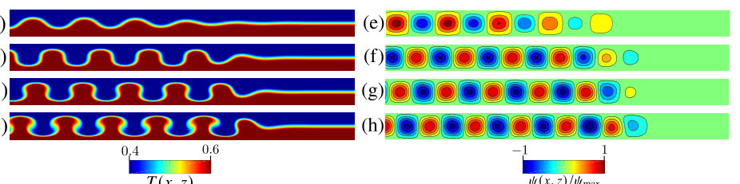
<figcaption class="paper-figure-caption"><b>Fig 5.</b> Figure 5: Color contours of temperature (left column) and normalized stream function (right col- umn) for fronts in a 2D domain. Each row is for a different value of Ra and shows contours at the time when xf = 24. The spatial region 13 ≤x ≤26 is shown for clarity. (a),(e) Ra = 2000; (b),(f) Ra=3300; (c),(g) Ra=5000; (d),(h) Ra=104. Simulation parameters: Sim. 1, Γ=30, Pr=1.</figcaption>
</figure>
</div>

<p><strong>Summary.</strong> This paper numerically analyzes how convection roll fronts propagate in Rayleigh-Bénard convection, determining scaling laws for front velocity and wavenumber. Key findings show that the front velocity scales as $\epsilon^{1/2}$ near onset, while the wavenumber scaling transitions from linear to $\epsilon^{1/4}$ further from threshold. The work is significant for understanding pattern selection in non-equilibrium physical systems.</p>
<p><strong>Why it may be interesting.</strong> While focused on classical fluid dynamics, the study of pattern selection, front propagation, and universal scaling laws ($\epsilon^{1/2}$, $\epsilon^{1/4}$) shares mathematical similarities with pattern formation problems studied in non-equilibrium statistical mechanics and reaction-diffusion systems.</p>
<details>
<summary>Detailed structure</summary>
<p><strong>Main problem.</strong> The study investigates the dynamics and scaling laws governing the propagation of fronts of convection rolls in Rayleigh-Bénard convection under supercritical conditions.</p>
<p><strong>Main result.</strong> The front velocity scales as $\epsilon^{1/2}$ for small supercriticality ($\epsilon \lesssim 1$), while the wavenumber exhibits different scaling behaviors ($\epsilon$ vs. $\epsilon^{1/4}$) depending on the distance from onset.</p>
<p><strong>Method.</strong> The research employs detailed numerical simulations in 2D and 3D using a spectral element approach, comparing results against amplitude equation predictions and experimental data.</p>
<p><strong>Model / system.</strong> The physical system is Rayleigh-Bénard convection in a shallow fluid layer, governed by the Boussinesq equations. The focus is on the propagating front separating quiescent fluid from the forming convective rolls.</p>
<p><strong>Key observables.</strong> Front velocity ($v_f$) and the wavenumber ($q$) of the convection rolls.</p>
<p><strong>Important parameters / regimes.</strong> Reduced Rayleigh number ($\epsilon$), Prandtl number ($   ext{Pr}$), and domain geometry/boundary conditions.</p>
<p><strong>Assumptions / limitations.</strong> The front dynamics are studied before the bulk instability fully develops, and comparisons are made assuming ideal boundary conditions (e.g., perfect thermal conductivity).</p>
<p><strong>Figures summary.</strong> The notes describe setups for 2D, 3D box, and cylindrical domains illustrating the geometry of the convection front propagation.</p>
<p><strong>Paper structure.</strong> The paper systematically explores the front dynamics by varying the dimensionality (2D vs 3D), the geometry (box vs cylinder), and the method of front initiation, while comparing scaling laws to theory and experiments.</p>
</details>
<details>
<summary>Abstract</summary>
<p>We investigate the propagation of counter-rotating convection rolls in Rayleigh-Bénard convection initiated locally in a quiescent fluid layer under supercritical conditions. The velocity of the front separating quiescent fluid from the forming convection rolls, and the wavenumber of the convection rolls remaining behind the front, are explored. We numerically investigate fronts of forming convection rolls over five orders of magnitude of the reduced Rayleigh number, $ε$, in 2D and 3D domains, for a broad range of boundary conditions, and for different front initiation approaches. In all cases, the front velocity increases as $ε^{1/2}$ with increasing $ε$ for $ε\lesssim 1$ in agreement with predictions using the amplitude equation. The amplitude equation description of the front velocity remains accurate for $ε\lesssim 10$ except when the Prandtl number is large which yields a velocity that is faster than predicted for a fluid layer far from threshold. The wavenumber of the convection rolls increases linearly with $ε$ in agreement with the wavenumber that maximizes the growth rate of perturbations in the linear regime. Farther from onset, the wavenumber growth transitions to a reduced scaling of $ε^{1/4}$ in agreement with predictions using the Swift-Hohenberg equation in the large $ε$ limit. The scalings describing the wavenumber variation with $ε$ are independent of the domain geometry, boundary conditions, and front initiation method. However, the front-selected wavenumber at criticality does not equal the critical wavenumber of the bulk instability, in general, and depends significantly upon these details. We compare our results with experimental measurements where possible.</p>
</details>
<p><sub><a href="#top">↑ back to top</a></sub></p>

<p><a id="paper-2608.22083"></a></p>
<h3 id="loop-currents-in-haldanes-model-and-in-time-reversal-breaking-superconductors"><a href="http://arxiv.org/abs/2608.22083v1">Loop currents in Haldane's model and in time-reversal-breaking superconductors</a></h3>
<p><strong>Authors:</strong> Azzam Alzahrani, Victor M. Yakovenko<br>
<strong>Type:</strong> theory · <strong>Category:</strong> other · <strong>PDF:</strong> <a href="https://arxiv.org/pdf/2608.22083v1">https://arxiv.org/pdf/2608.22083v1</a><br>
<strong>Analysis basis:</strong> full PDF text, analyzed in chunks
<strong>Topic relevance:</strong> <code>analog quantum simulation</code> <strong>3/5</strong> · <code>Keldysh / 2PI / non-Gaussian methods</code> <strong>2/5</strong> · <code>methods for driven-dissipative</code> <strong>2/5</strong></p>
<div class="figure-strip-hint">↔ Scroll figures horizontally</div>
<div class="paper-figures-scroll">
<figure class="paper-figure-card">
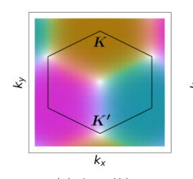
<figcaption class="paper-figure-caption"><b>Fig 1.</b> Fig. 5: The inter-sublattice superconducting pairing amplitudes ∆AB(k) in panel (a) and ∆BA(k) in panel (b) over the Brillouin zone. The phase and magnitude are represented by color and saturation, respectively. The amplitude ∆AB(K′) = 0 vanishes at the K′ point, whereas ∆BA(K) = 0 vanishes at the K point.</figcaption>
</figure>
<figure class="paper-figure-card">
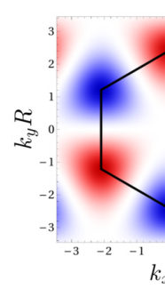
<figcaption class="paper-figure-caption"><b>Fig 2.</b> Fig. 6: A 2D graph of the function f3(k) from Eq. (6) over the Brillouin zone. The function f3(k) appears in the loop current ˇIlc(k), Eq. (50), and in the supercon- ducting sublattice polarization Ξ(k), Eq. (56).</figcaption>
</figure>
<figure class="paper-figure-card">
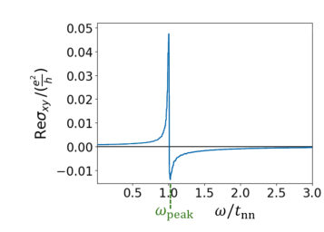
<figcaption class="paper-figure-caption"><b>Fig 3.</b> Fig. 7: Frequency-dependence of the Hall conductivity in clean chiral d-wave super- conductor with 2D honeycomb lattice, with µ = −0.5tnn and ∆= 0.1tnn. (a) is the imaginary part and (b) is the real part.</figcaption>
</figure>
<figure class="paper-figure-card">
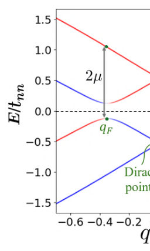
<figcaption class="paper-figure-caption"><b>Fig 4.</b> Fig. 8: Vertical axis: Energy eigenvalues of the BdG Hamiltonian near the K point of the honeycomb lattice. Horizontal axis: The deviation qx = kx−Kx of momentum from the K point in the x direction. The horizontal dashed line represents the Fermi level at the energy distance µ from the Dirac point. Blue and red colors represent electron and hole states, respectively. The vertical lines with arrows indicate optical transitions from the energy −E1 in the lower band to E2 in the upper band.</figcaption>
</figure>
<figure class="paper-figure-card">
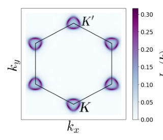
<figcaption class="paper-figure-caption"><b>Fig 5.</b> Fig. 9: (a) Spectral density LH(k) from Eq. (75) shown over the Brillouin zone. (b) A close-up in the vicinity of the K point.</figcaption>
</figure>
</div>

<p><strong>Summary.</strong> This theoretical work examines how loop currents manifest optically in topological materials, specifically Haldane's model and chiral superconductors. By relating the loop current expectation value to the frequency-dependent ac Hall conductivity, the authors predict sharp absorption peaks whose spectral weight directly quantifies the underlying chiral currents. This offers a pathway for experimental detection of topological superconductivity.</p>
<p><strong>Why it may be interesting.</strong> The connection drawn between topological currents (loop currents) and measurable optical responses ($\sigma_H(\omega)$) provides a powerful, experimentally verifiable diagnostic tool for characterizing exotic superconducting and topological phases.</p>
<details>
<summary>Detailed structure</summary>
<p><strong>Main problem.</strong> The study investigates the optical manifestations of loop currents in topological systems, specifically Haldane's model and time-reversal-breaking superconductors.</p>
<p><strong>Main result.</strong> The authors establish a direct relationship between the optical spectral weight of the ac Hall conductivity and the magnitude of the induced loop currents in both models.</p>
<p><strong>Method.</strong> Theoretical calculations involving Green's functions, Bogoliubov-de Gennes (BdG) Hamiltonians, and the analysis of optical conductivity ($\sigma_H(\omega)$) via Kubo-like formulas.</p>
<p><strong>Model / system.</strong> The models analyzed are Haldane's model (a Chern insulator on the honeycomb lattice) and a chiral superconductor on the honeycomb lattice, both described using lattice Hamiltonians and BdG formalism.</p>
<p><strong>Key observables.</strong> Loop currents ($\langle \hat{I}_{	ext{lc}} 
angle$), frequency-dependent ac Hall conductivity ($\sigma_{xy}(\omega)$), and the optical Hall spectral weight ($ ext{W}_{    ext{Hall}}$).</p>
<p><strong>Important parameters / regimes.</strong> The superconducting gap ($\Delta$), Fermi level ($\mu$), and the energy difference between Dirac bands ($\omega_{	ext{peak}}$).</p>
<p><strong>Assumptions / limitations.</strong> Approximations are made regarding the superconducting gap relative to the Fermi energy ($\Delta \ll 2\mu$), and the analysis focuses on the optical response rather than the DC response.</p>
<p><strong>Figures summary.</strong> Figures illustrate Haldane's model on the honeycomb lattice, the spatial distribution of loop currents, and the energy eigenvalues near the K point showing optical transition peaks.</p>
<p><strong>Paper structure.</strong> The paper proceeds by first calculating loop currents in Haldane's model, then extending the methodology to analyze the ac Hall conductivity in chiral superconductors, deriving relations between the spectral weight and loop currents.</p>
</details>
<details>
<summary>Abstract</summary>
<p>We present a theoretical study of optical manifestations of loop currents in Haldane's model and in time-reversal-breaking superconductors. For Haldane's model, we calculate the expectation value of loop currents in terms of model parameters and relate it with the integrated optical spectral weight for the frequency-dependent ac Hall conductivity. Thus, experimental measurements of the latter can provide information about the presence and magnitude of steady loop currents in the system. Then we elaborate on loop currents in a chiral superconductor on the honeycomb lattice, studied earlier by Brydon et al. (2019). We demonstrate that a sharp optical absorption peak in the ac Hall conductivity originates from excitations between the lower and upper Dirac bands, activated by the time-reversal-breaking superconductivity. The frequency of the peak is twice the energy difference between the Fermi level and the Dirac point. The optical spectral weight of the peak is directly related to the magnitude of loop currents induced in the unit cells by the chiral superconducting pairing, in similarity to Haldane's model.</p>
</details>
<p><sub><a href="#top">↑ back to top</a></sub></p>

<p><a id="paper-2608.22136"></a></p>
<h3 id="even-harmonic-generation-from-topological-edge-states-in-generalized-su-schrieffer-heeger-models"><a href="http://arxiv.org/abs/2608.22136v1">Even-harmonic generation from topological edge states in generalized Su-Schrieffer-Heeger models</a></h3>
<p><strong>Authors:</strong> Chi-Ting Liu, J-S You, Hsiu-Chuan Hsu<br>
<strong>Type:</strong> theory · <strong>Category:</strong> other · <strong>PDF:</strong> <a href="https://arxiv.org/pdf/2608.22136v1">https://arxiv.org/pdf/2608.22136v1</a><br>
<strong>Analysis basis:</strong> full PDF text, analyzed in chunks
<strong>Topic relevance:</strong> <code>analog quantum simulation</code> <strong>3/5</strong> · <code>interference shaping light</code> <strong>3/5</strong></p>
<div class="figure-strip-hint">↔ Scroll figures horizontally</div>
<div class="paper-figures-scroll">
<figure class="paper-figure-card">
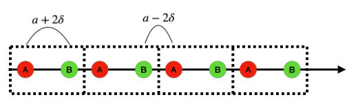
<figcaption class="paper-figure-caption"><b>Fig 1.</b> FIG. 1. The schematic of the one-dimensional chain studied in this work. Each dashed rectangle denotes a unit cell containing two sublattices A and B. The distance between A and B within one unit cell is a + 2δ. The distance between A and B of neighboring unit cells is a −2δ.</figcaption>
</figure>
<figure class="paper-figure-card">
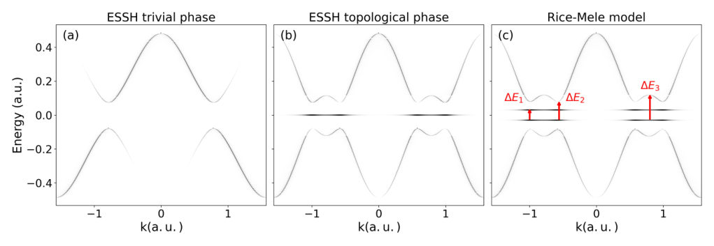
<figcaption class="paper-figure-caption"><b>Fig 2.</b> FIG. 2. Momentum-resolved energy spectra of the ESSH-trivial (a), ESSH-topological (b) and the Rice-Mele models (c) for N = 2000. Red arrows in (c) indicate three energy differences defined in Table I: ∆E1 ≈0.06, ∆E2 ≈0.11, and ∆E3 ≈0.15.</figcaption>
</figure>
<figure class="paper-figure-card">
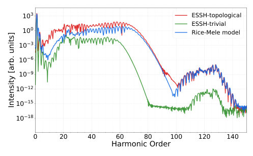
<figcaption class="paper-figure-caption"><b>Fig 3.</b> FIG. 3. Harmonic spectra for the ESSH-trivial phase, ESSH- topological phase, and the Rice-Mele model for N = 2000, a = 2. The blue and red dashed vertical lines denote harmonic orders of 8 and 20.4, respectively.</figcaption>
</figure>
<figure class="paper-figure-card">
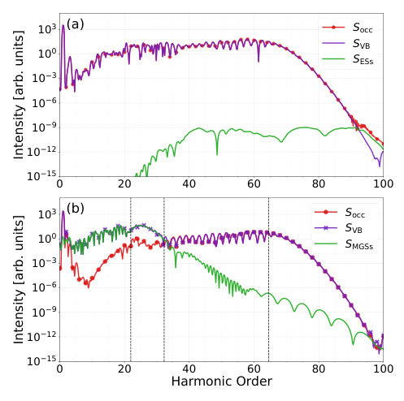
<figcaption class="paper-figure-caption"><b>Fig 4.</b> FIG. 4. Decomposition analysis of harmonic spectrum compar- ing the contributions from the total dipole acceleration (Socc), valence-band states (SVB), and edge or midgap states (SESs or SMGSs) for (a) ESSH-topological phase, (b) Rice-Mele model. Black vertical dashed lines in the lower panels indicate char- acteristic harmonic orders corresponding to the bulk bandgap (Egap/ω ≈22), one quarter of the maximum CB-VB energy difference (Emax/4ω ≈32), and one half of the maximum CB-VB energy difference (Emax/2ω ≈64).</figcaption>
</figure>
<figure class="paper-figure-card">
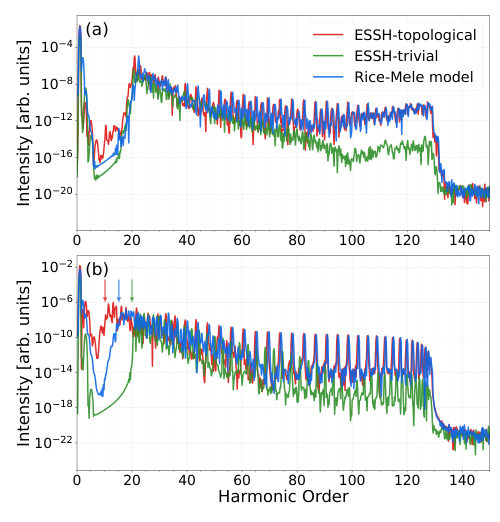
<figcaption class="paper-figure-caption"><b>Fig 5.</b> FIG. 5. Harmonic spectrum of the ESSH-trivial phase, ESSH- topological phase, and the Rice-Mele model under localized illumination. (a) Illumination centered in the middle of the chain (x0 = 0). (b) Illumination applied at the boundary (x0 = 95). Three arrows indicate characteristic harmonic orders for three different models, from left to right: 10 (Egap/2 for ESSH model), 15 (∆E2 from occupied MGSs to CB valley for Rice-Mele model), and 20 (Egap for ESSH model).</figcaption>
</figure>
</div>

<p><strong>Summary.</strong> This work uses High-order Harmonic Generation (HHG) as a diagnostic tool to study topological edge states in 1D quantum models like the ESSH chain. The key finding is that local laser illumination near a topological boundary enforces a selection rule, causing only even harmonics to appear. This demonstrates that controlling the laser's spatial position allows for symmetry control over the emitted quantum light spectrum.</p>
<p><strong>Why it may be interesting.</strong> The finding that the spatial location of the laser can selectively control the symmetry of the emitted harmonics (even vs. odd) provides a novel, symmetry-based control mechanism for quantum light sources in low-dimensional nanostructures.</p>
<details>
<summary>Detailed structure</summary>
<p><strong>Main problem.</strong> The study investigates High-order Harmonic Generation (HHG) in solids to probe the symmetry and topological properties of quantum materials.</p>
<p><strong>Main result.</strong> Local illumination at a topological boundary causes the HHG spectrum to exhibit a selection rule where odd harmonics vanish and even harmonics become dominant, linked to the zero-energy edge states and particle-hole symmetry.</p>
<p><strong>Method.</strong> The authors numerically compute the HHG spectrum by coupling the system Hamiltonian to a time-dependent laser pulse and analyzing the Fourier transform of the dipole acceleration.</p>
<p><strong>Model / system.</strong> The research uses one-dimensional models, specifically the Extended Su-Schrieffer-Heeger (ESSH) model and the Rice-Mele model, which describe topological insulators with edge or midgap states.</p>
<p><strong>Key observables.</strong> HHG spectrum intensity vs. harmonic order, decomposition of the total response into contributions from edge states (SESs) and valence bands (SVB).</p>
<p><strong>Important parameters / regimes.</strong> Laser frequency ($\omega$), hopping parameters ($v, w, J, U$), and the spatial location of the laser illumination ($x_0$).</p>
<p><strong>Assumptions / limitations.</strong> The analysis relies on the dipole approximation and the assumption that the zero-energy edge states possess particle-hole symmetry.</p>
<p><strong>Figures summary.</strong> Figures compare HHG spectra under global vs. local illumination for different models, showing the emergence of even harmonics specifically when the laser is localized near a topological boundary.</p>
<p><strong>Paper structure.</strong> The paper progresses by first establishing the theoretical framework of HHG in topological systems, then comparing global illumination results (ESSH vs. RM), and finally focusing on the crucial findings derived from local illumination to establish the even-harmonic selection rule.</p>
</details>
<details>
<summary>Abstract</summary>
<p>High-order harmonic generation (HHG) in solids has emerged as a powerful probe of symmetry and topological properties in quantum materials. In this work, we investigate the HHG response in one-dimensional solids with edge or midgap states under global and local illumination. We numerically compute the HHG spectrum for the Su-Schrieffer-Heeger (SSH) model with next-nearest-opposite sublattice hopping, dubbed the extended SSH (ESSH) model, and the Rice-Mele model, a one-dimensional system with broken inversion symmetry introduced via staggered on-site potentials. By contrasting the spectral features of the ESSH and Rice-Mele models under global illumination, our analysis reveals that although midgap states provide additional pathways for transitions, the resulting interference is destructive, leading to spectral features distinct from those of edge states. Furthermore, when a single boundary of the topological insulator is locally illuminated, the HHG spectrum of the edge states exhibits vanishing odd harmonics, leaving even harmonics dominant in the spectrum. We identify this even-harmonic selection rule as a consequence of the zero-energy character of the edge states and the particle-hole symmetry of the system, which enforces even field parity of the zero-mode response. These findings reveal that the spatial location of the laser illumination offers a route to control the symmetry of the system, thereby selectively suppressing or enhancing even- and odd-order harmonics in low-dimensional nanostructures.</p>
</details>
<p><sub><a href="#top">↑ back to top</a></sub></p>

<p><a id="paper-2608.21900"></a></p>
<h3 id="extrinsic-nonlinear-spin-currents-in-spin-orbit-coupled-systems-a-boltzmann-transport-study"><a href="http://arxiv.org/abs/2608.21900v1">Extrinsic nonlinear spin currents in spin-orbit coupled systems: A Boltzmann transport study</a></h3>
<p><strong>Authors:</strong> Jiwei Tian, Huaqing Huang<br>
<strong>Type:</strong> theory · <strong>Category:</strong> statistical mechanics · <strong>PDF:</strong> <a href="https://arxiv.org/pdf/2608.21900v1">https://arxiv.org/pdf/2608.21900v1</a><br>
<strong>Analysis basis:</strong> full PDF text, analyzed in chunks
<strong>Topic relevance:</strong> <code>Keldysh / 2PI / non-Gaussian methods</code> <strong>3/5</strong> · <code>methods for driven-dissipative</code> <strong>2/5</strong> · <code>non-equilibrium universality</code> <strong>1/5</strong></p>
<div class="figure-strip-hint">↔ Scroll figures horizontally</div>
<div class="paper-figures-scroll">
<figure class="paper-figure-card">
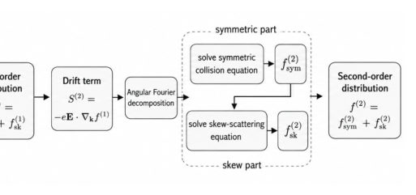
<figcaption class="paper-figure-caption"><b>Fig 1.</b> FIG. 1. Recursive procedure for solving the Boltzmann equation order by order in the applied electric field.</figcaption>
</figure>
<figure class="paper-figure-card">
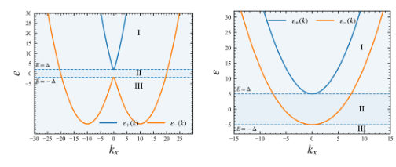
<figcaption class="paper-figure-caption"><b>Fig 2.</b> FIG. 2. Energy-band structures of the Hamiltonian describ- ing the surface states of a topological insulator for (a) v = 5, ∆= 2, and m = 2; (b) v = 1, ∆= 5, and m = 2.</figcaption>
</figure>
<figure class="paper-figure-card">

<figcaption class="paper-figure-caption"><b>Fig 3.</b> FIG. 4. Second-order extrinsic nonlinear spin-current re- sponse coefficient Γm,ext knl as a function of the chemical poten- tial µ for a = 1, b = 0.2, m = 2, ∆= 5, v = 1, and β = 5: (a) Γx,ext xxx , (b) Γy,ext xxx , (c) Γx,ext yxx , and (d) Γy,ext yxx .</figcaption>
</figure>
<figure class="paper-figure-card">

<figcaption class="paper-figure-caption"><b>Fig 4.</b> FIG. 3. Second-order extrinsic nonlinear spin-current re- sponse coefficient Γm,ext knl as a function of the chemical poten- tial µ for a = 1, b = 0.2, m = 2, ∆= 2, v = 5, and β = 5: (a) Γx,ext xxx , (b) Γy,ext xxx , (c) Γx,ext yxx , and (d) Γy,ext yxx .</figcaption>
</figure>
</div>

<p><strong>Summary.</strong> This work develops a sophisticated Boltzmann transport theory to calculate nonlinear spin currents in topological insulators, moving beyond simple relaxation-time approximations. By expanding the distribution function in angular Fourier harmonics, the authors show that higher-order harmonics are crucial for capturing the full physics of spin transport. The methodology provides a systematic way to analyze complex, non-equilibrium transport phenomena in SOC materials.</p>
<p><strong>Why it may be interesting.</strong> While focused on condensed matter transport, the rigorous, non-equilibrium, harmonic expansion technique for solving the Boltzmann equation is a powerful theoretical tool applicable to open quantum systems dynamics.</p>
<details>
<summary>Detailed structure</summary>
<p><strong>Main problem.</strong> The study addresses the limitations of the single-relaxation-time approximation when calculating extrinsic nonlinear spin currents in spin-orbit coupled systems.</p>
<p><strong>Main result.</strong> Higher angular harmonics of the non-equilibrium distribution and scattering between distinct constant-energy contours are shown to be essential for accurately describing extrinsic nonlinear spin transport.</p>
<p><strong>Method.</strong> The authors employ a semiclassical Boltzmann transport framework, decomposing the collision integral and the distribution function into Fourier harmonics to solve coupled algebraic equations recursively.</p>
<p><strong>Model / system.</strong> The analysis is applied to the gapped surface states of a topological insulator, modeled by a specific Hamiltonian involving spin-orbit coupling and a gap term.</p>
<p><strong>Key observables.</strong> Second-order extrinsic spin-current response coefficient ($\Gamma_{\ell, 	ext{ext}}^{ijl}$), and the angular harmonics ($\ell=1, 2$) of the distribution function.</p>
<p><strong>Important parameters / regimes.</strong> The ratio $mv^2/\Delta$ dictates the scattering regime (monotonic vs. nonmonotonic band structure).</p>
<p><strong>Assumptions / limitations.</strong> The analysis neglects the contribution of the skew-scattering part to the second-order distribution function and assumes elastic impurity scattering, which limits the relaxation of the $l=0$ harmonic.</p>
<p><strong>Figures summary.</strong> Figures illustrate the recursive solution procedure, the band structures for different parameter regimes, and the calculated second-order extrinsic spin-current coefficients in the nonmonotonic regime.</p>
<p><strong>Paper structure.</strong> The paper systematically develops the Boltzmann equation solution by expanding the distribution function in Fourier harmonics, solving coupled equations for different harmonics, and finally calculating the second-order spin current coefficients.</p>
</details>
<details>
<summary>Abstract</summary>
<p>We develop a semiclassical Boltzmann framework for second-order extrinsic spin transport in the presence of skew scattering. The conventional relaxation-time approximation reduces the full collision integral to a single phenomenological timescale and thereby neglects the angular structure of impurity scattering. While the transport relaxation time primarily characterizes the leading angular harmonic of the nonequilibrium distribution, nonlinear response is sensitive to its higher angular harmonics, which are governed by distinct components of the collision operator. We therefore retain the angular and band dependence of the scattering kernel and decompose both the collision integral and the distribution function into Fourier harmonics. The resulting coupled algebraic equations allow the symmetric and skew-scattering corrections to the distribution function to be obtained recursively order by order in the electric field. We apply this formalism to the gapped surface states of a topological insulator with spin-dependent impurity scattering and evaluate the corresponding second-order extrinsic spin-current response. Our results show that higher angular harmonics of the nonequilibrium distribution and scattering between distinct constant-energy contours play an essential role in extrinsic nonlinear spin transport beyond the single-relaxation-time approximation.</p>
</details>
<p><sub><a href="#top">↑ back to top</a></sub></p>

<p><a id="paper-2608.22654"></a></p>
<h3 id="structural-disorder-and-critical-voltage-scaling-in-alaloxal-josephson-junction-arrays"><a href="http://arxiv.org/abs/2608.22654v1">Structural disorder and critical voltage scaling in Al/AlOx/Al Josephson junction arrays</a></h3>
<p><strong>Authors:</strong> Amanuel M. Berhane, Susan Coppersmith, Emma Mitchell, Timothy Duty<br>
<strong>Type:</strong> both · <strong>Category:</strong> disordered systems and neural networks · <strong>PDF:</strong> <a href="https://arxiv.org/pdf/2608.22654v1">https://arxiv.org/pdf/2608.22654v1</a><br>
<strong>Analysis basis:</strong> full PDF text, analyzed in chunks
<strong>Topic relevance:</strong> <code>non-equilibrium universality</code> <strong>3/5</strong> · <code>Frenkel-Kontorova</code> <strong>1/5</strong> · <code>driven-dissipative phase transition</code> <strong>1/5</strong></p>
<div class="figure-strip-hint">↔ Scroll figures horizontally</div>
<div class="paper-figures-scroll">
<figure class="paper-figure-card">

<figcaption class="paper-figure-caption"><b>Fig 1.</b> Figure 1: Representative SEM images showing examples of Type-A and Type-B Josephson junction arrays. (a) Type-AI array consisting of 800 nm-long islands with uniform island geometry and the presence of excess metal strips. The nominal junction area of this family of arrays is 100×100 nm2. (b) Type-B arrays fabricated without excess metal strips. The left panel shows a single-junction chain (Type- BI) consisting of 400 nm-long islands with a uniform island width of 200 nm and a nominal junction area of 100 × 200 nm2. The right panel shows a SQUID array (Type-BII) fabricated with the same island and junction dimensions as the Type-BI chains. The Type-BI and Type-BII arrays were fabricated on...</figcaption>
</figure>
<figure class="paper-figure-card">

<figcaption class="paper-figure-caption"><b>Fig 2.</b> Figure 2: SEM images of Type-AI junctions fabricated at evaporation rates of 0.3 ˚A/s (a), 1.0 ˚A/s (b), and 4.0 ˚A/s (c), illustrating the systematic evolution of film morphology with deposition rate. Average room-temperature single-junction resistance, Rj, as a function of electron-beam exposure dose for Type-AI arrays (N = 1000) with nominal junction areas of 100 × 100 nm2 (d) and 100 × 200 nm2</figcaption>
</figure>
<figure class="paper-figure-card">

<figcaption class="paper-figure-caption"><b>Fig 3.</b> Figure 3: Average room-temperature single-junction resistance Rj as a function of electron-beam exposure dose (junction area) for Type-AI arrays (N = 1000) fabri- cated with and without in situ post-oxidation, with all other processing parameters kept constant. (a) Arrays with nominal junction areas of 100×100 nm2. (b) Arrays with nominal junction areas of 100 × 200 nm2. The missing data point at an expo- sure dose of 1000 µC/cm2 in (b) corresponds to a failed device. (c) Critical-voltage scaling plot for Type-AI arrays fabricated with and without post-oxidation. The solid red lines show fits based on the pinned Luttinger-liquid theory [15].</figcaption>
</figure>
<figure class="paper-figure-card">

<figcaption class="paper-figure-caption"><b>Fig 4.</b> Figure 4: (a) and (b) show magnified SEM images of Type-BI and Type-BII ar- rays, respectively, in which three representative junctions are shown, illustrating the systematic formation of nanoscale gaps at every other junction (red arrows) due to shadow evaporation in parallel direction.</figcaption>
</figure>
<figure class="paper-figure-card">

<figcaption class="paper-figure-caption"><b>Fig 5.</b> Figure 5: Room-temperature single-junction resistance Rj as a function of electron- beam exposure dose (junction area) for Type-AI and Type-BI/Type-BII arrays. (b) Low-temperature (20 mK) dc current–voltage characteristics (IVCs) of three representative arrays of each type selected from the red box in (a), all fabricated at the same exposure dose of 500 µC/cm2 (corresponding to nominally identical junction areas). (c) Differential conductance traces corresponding to the IVCs in (b), highlighting the contrasting non-linear transport behaviour of the three device types. (d) Scaled critical voltage υ as a function of the scaled Bloch bandwidth w for Type-A and Type-B devices revealing distinct...</figcaption>
</figure>
</div>

<p><strong>Summary.</strong> This work examines how structural disorder affects the critical voltage scaling in Josephson junction arrays. By comparing results from varying fabrication parameters (like deposition rate) against those with engineered defects (like nanoscale gaps), the authors map out which structural variations merely renormalize transport coefficients versus those that fundamentally alter the collective pinning physics. This provides crucial design guidelines for superconducting quantum devices.</p>
<p><strong>Why it may be interesting.</strong> The robustness of the scaling law despite structural changes suggests underlying universal physics governing collective transport in disordered superconducting systems, which is relevant to understanding quantum phase transitions.</p>
<details>
<summary>Detailed structure</summary>
<p><strong>Main problem.</strong> The study investigates how fabrication-induced structural defects influence the critical-voltage scaling in one-dimensional Josephson junction (JJ) arrays.</p>
<p><strong>Main result.</strong> The normalized critical-voltage scaling is remarkably robust against variations in aluminum evaporation rates, but the scaling behavior is significantly altered by the deliberate introduction of nanoscale gaps.</p>
<p><strong>Method.</strong> The authors combine low-temperature transport measurements (IVCs) with structural characterization (SEM) and theoretical analysis based on the pinned Luttinger-liquid theory.</p>
<p><strong>Model / system.</strong> The physical system is Al/AlOx/Al Josephson junction arrays, operating in the insulating regime where transport is governed by collective charge dynamics and disorder-induced pinning.</p>
<p><strong>Key observables.</strong> Critical voltage ($V_C$), room-temperature junction resistance ($R_j$), and the normalized critical-voltage scaling relationship ($
u$ vs. $w$).</p>
<p><strong>Important parameters / regimes.</strong> Aluminum evaporation rate, junction geometry (Type-AI, Type-BI, Type-BII), and the ratio of Josephson energy to charging energy ($E_J/E_{CP}$).</p>
<p><strong>Assumptions / limitations.</strong> The analysis relies on the pinned Luttinger-liquid theory to describe the collective transport behavior in the presence of disorder.</p>
<p><strong>Figures summary.</strong> Figures show SEM images illustrating morphology changes with deposition rate, $R_j$ dependence on dose, and the collapse of normalized critical-voltage scaling onto a common functional form.</p>
<p><strong>Paper structure.</strong> The paper systematically compares the effects of different structural modifications—varying evaporation rates, post-oxidation, and introducing nanoscale gaps—on the measured critical voltage scaling, contrasting the robustness of the functional form versus the sensitivity of the prefactors.</p>
</details>
<details>
<summary>Abstract</summary>
<p>The insulating state of one-dimensional Josephson junction (JJ) arrays is governed by collective charge dynamics and disorder-induced pinning, resulting in a finite critical voltage under dc bias. Here, we investigate the influence of fabrication-induced structural defects on the critical-voltage scaling of small-capacitance Aluminium-Aluminium oxide-Aluminium (Al/AlOx/Al) JJ arrays. Controlled variation of the aluminium evaporation rate produces pronounced changes in grain morphology and room-temperature junction resistance. Despite these substantial structural modifications, the normalised critical-voltage scaling is preserved, demonstrating that the collective transport behaviour is remarkably robust against this class of fabrication-induced defects. In contrast, the deliberate introduction of nanoscale gaps into the junctions introduces additional junction-to-junction structural variations that systematically modify the normalised scaling behaviour. Likewise, in situ postfabrication oxidation alters the scaling coefficient while preserving the functional form of the scaling law, indicating that the collective transport is sensitive to specific classes of structural modifications. These results establish which fabrication-induced structural defects influence the collective transport in insulating Al/AlOx/Al Josephson junction arrays, providing new insight into the role of fabrication-induced structural disorder and practical guidance for the design of future Quantum Phase Slip (QPS) devices.</p>
</details>
<p><sub><a href="#top">↑ back to top</a></sub></p>

<p><a id="paper-2608.22736"></a></p>
<h3 id="parity-dependent-coupling-of-molecular-spin-chains-to-a-superconductor"><a href="http://arxiv.org/abs/2608.22736v1">Parity-dependent coupling of molecular spin chains to a superconductor</a></h3>
<p><strong>Authors:</strong> Katerina Vaxevani, Jon Ortuzar, Stefano Trivini, Georg Monninger, Dongfei Wang, Vilas-Varela, Lucía Gómez-Rodrigo, Diego Peña, Jose Ignacio Pascual<br>
<strong>Type:</strong> both · <strong>Category:</strong> other · <strong>PDF:</strong> <a href="https://arxiv.org/pdf/2608.22736v1">https://arxiv.org/pdf/2608.22736v1</a><br>
<strong>Analysis basis:</strong> full PDF text, analyzed in chunks
<strong>Topic relevance:</strong> <code>analog quantum simulation</code> <strong>3/5</strong> · <code>Keldysh / 2PI / non-Gaussian methods</code> <strong>1/5</strong></p>
<div class="figure-strip-hint">↔ Scroll figures horizontally</div>
<div class="paper-figures-scroll">
<figure class="paper-figure-card">

<figcaption class="paper-figure-caption"><b>Fig 1.</b> Fig. 1. Interacting spin chains and a proximitized Au(111)/Nb surface: a Representation of an S=1 antiferromagnetic chain with fractional spin-1/2 edge states. Depending on the parity of the chain length N, the ground state is S=0 (even) or S=1 (odd), set by the relative orientation of the edge spins. b Chemical structure of a S=1 triangulene chain of length N used in this work as integer spin chain [13]. c STM topography of a Au film grown on Nb(110), exhibiting the characteristic herringbone reconstruction of Au(111) surfaces. d Differential conductance spectrum measured with a Nb tip on the clean Au(111)/Nb(110) surface (red), compared with a spectrum on the bare Nb(110) substrate...</figcaption>
</figure>
<figure class="paper-figure-card">

<figcaption class="paper-figure-caption"><b>Fig 2.</b> Fig. 2. Triangulene chains over a proximitized Au(111) superconductor. a Chemical structure of the organic precursors used [13] and the targeted triangulene chain. b STM image of the surface of a Au(111) film grown on Nb(110) substrates (Section S1 for details). c,d Constant-height bond-resolved current images of two selected triangulene chains with N=8 and 11 units. These images and others in Supplementary Figures S3-S14 have been measured at low sample voltage (V=5 mV) using a CO-functionalized superconducting STM tip. e Comparison of differential conductance spectra acquired at the termini of the two chains, using a superconducting STM tip to enhance the energy resolution at 1.2 K (dI/dV...</figcaption>
</figure>
<figure class="paper-figure-card">

<figcaption class="paper-figure-caption"><b>Fig 3.</b> Fig. 3. Scaling of edge excitations with spin-chain length: a Differential conductance spectra at the edge of triangulene chains with increasing length N. Down-pointing red triangles mark edge excitations; blue stars mark collective spin modes (dI/dV @ V = 50 mV, I = 1 nA). b Low-energy spectra at the termini of chains in panel a) and longer ones (Figs. S3–S14). The dGSJ resonances are aligned to remove tip-dependent gap variations; YSR states are marked with blue up-pointing triangles (dI/dV @ V = 5 mV, I = 500 pA). c Parity-dependent renormalization of J∗ K with |J|, from the two-site model of Section S5. Even chains show negligible J∗ K for larger |J| values, consistent with the absence...</figcaption>
</figure>
<figure class="paper-figure-card">

<figcaption class="paper-figure-caption"><b>Fig 4.</b> Fig. 4. Collective spin modes in the bulk of triangulene chains. a Long-range dI/dV spectrum on the terminal triangulene (orange) of the N = 11 chain of Fig. 2d, compared with a spectrum of inner triangulenes (blue). Both spectra are averaged over signal-rich regions in the zig-zag edges of end-triangulene and middle triangulenes, respectively. To facilitate comparison, spectra are normalized to match the same dI/dV value at V=10 mV. The dashed line is a reference spectrum averaged over the surface area. (dI/dV @ V = 50 mV, I = 1 nA). b dI/dV map obtained at the indicated voltage values, also marked in a. The maps are acquired from a grid of spectra at junction resistance 50 MΩ. c dI/dV...</figcaption>
</figure>
<figure class="paper-figure-card">

<figcaption class="paper-figure-caption"><b>Fig 5.</b> Fig. 4c displays the spatial distribution of edge-localized ST and bulk CS excitations along</figcaption>
</figure>
</div>

<p><strong>Summary.</strong> This paper reports on the parity-dependent coupling between molecular spin chains and a superconductor using STS on triangulene chains. They found that odd-length chains exhibit superconducting gap features (YSR states) due to their net S=1 ground state, while even-length chains are decoupled. This demonstrates a controllable mechanism for engineering spin-superconductor hybrid quantum systems.</p>
<p><strong>Why it may be interesting.</strong> This work directly addresses the interplay between topological quantum states (Haldane chains) and superconducting proximity effects, which is central to building solid-state quantum devices and understanding emergent superconducting phenomena in molecular systems.</p>
<details>
<summary>Detailed structure</summary>
<p><strong>Main problem.</strong> The study investigates whether the topological fractionalization of quantum numbers in molecular spin chains survives when coupled to a superconducting condensate.</p>
<p><strong>Main result.</strong> The coupling exhibits a parity dependence: odd-length chains host Yu-Shiba-Rusinov (YSR) states from an S=1 ground state, while even-length chains form an S=0 ground state decoupled from the superconductor.</p>
<p><strong>Method.</strong> The research combines scanning tunneling spectroscopy (STS) measurements on molecular chains with theoretical modeling using spin Hamiltonians.</p>
<p><strong>Model / system.</strong> The system consists of molecular Haldane chains of spin-1 triangulene units grown on a proximitized Au(111)/Nb(110) superconducting surface. The physics is modeled using effective spin Hamiltonians incorporating inter-edge interactions and superconducting coupling.</p>
<p><strong>Key observables.</strong> Yu-Shiba-Rusinov (YSR) bound states inside the superconducting gap, and extra-gap singlet-triplet (ST) excitations.</p>
<p><strong>Important parameters / regimes.</strong> Chain length parity (odd vs. even), superconducting gap ($\Delta$), and the strength of inter-edge exchange interactions ($J$).</p>
<p><strong>Assumptions / limitations.</strong> The analysis assumes the superconducting gap is protected by the quasiparticle gap, and the mechanism is governed by the sign and strength of inter-edge interactions.</p>
<p><strong>Figures summary.</strong> Figures illustrate the system setup, STM topography, and dI/dV spectra comparing even and odd chains, showing the characteristic alternation of YSR resonances versus ST peaks.</p>
<p><strong>Paper structure.</strong> The paper progresses by establishing the physical system and the open question, presenting STS measurements showing parity dependence, developing theoretical models (e.g., two-site superconductor model), and concluding with the implications for molecular spin qubits.</p>
</details>
<details>
<summary>Abstract</summary>
<p>Topological order can fractionalize the quantum numbers of the underlying particles. A paradigmatic example is the spin-1/2 states at the edges of an antiferromagnetic integer-spin chain, protected by a topological Haldane gap in the bulk and mutually coupled in short chains. Owing to their topological protection, they are natural building blocks for hybrid spin-superconductor quantum systems. Whether fractionalization survives the coupling to a superconducting condensate, however, remains an open question. Here we grow molecular Haldane chains of antiferromagnetically coupled spin-1 triangulene units on a proximitized Au(111)/Nb(110) surface and resolve a parity-dependent coupling of their spin-1/2 edge states to the superconducting condensate by scanning tunnelling spectroscopy. Odd-length chains host Yu-Shiba-Rusinov bound states inside the superconducting gap, originating from the net S=1 ground state, whereas even-length chains form an S=0 ground state decoupled from the superconductor. A two-site superconductor model reveals that this alternation arises from the sign and strength of the inter-edge interaction, a mechanism independently validated by extra-gap spin excitations in tunnelling spectra. Collective many-body spin excitation modes are also detected decoupled from the superconductor by the much larger Haldane gap. The length-tunable coupling of the edge spins to the superconductor opens a route toward molecular spin qubits based on $π$-conjugated carbon architectures.</p>
</details>
<p><sub><a href="#top">↑ back to top</a></sub></p>

<p><a id="paper-2608.22783"></a></p>
<h3 id="a-topological-magnonic-black-white-hole-crystal"><a href="http://arxiv.org/abs/2608.22783v1">A Topological Magnonic Black-White Hole Crystal</a></h3>
<p><strong>Authors:</strong> D. Galvez-Poblete, R. M. Otxoa, A. S. Nunez, S. Allende<br>
<strong>Type:</strong> theory · <strong>Category:</strong> other · <strong>PDF:</strong> <a href="https://arxiv.org/pdf/2608.22783v1">https://arxiv.org/pdf/2608.22783v1</a><br>
<strong>Analysis basis:</strong> full PDF text, analyzed in chunks
<strong>Topic relevance:</strong> <code>analog quantum simulation</code> <strong>3/5</strong></p>
<div class="figure-strip-hint">↔ Scroll figures horizontally</div>
<div class="paper-figures-scroll">
<figure class="paper-figure-card">

<figcaption class="paper-figure-caption"><b>Fig 1.</b> FIG. 1. Schematic setup for black-hole (B-H) and white-hole (W-H) horizons in an antiferromagnetic system induced by a geometrical constriction, w ≪W , and an applied spin current. The central region hosts a supermagnonic regime (u &gt; v), whereas the outer regions remain submagnonic (u &lt; v). The lower panel displays the spatial profile of the effective flow velocity u(x), with the horizons located at the transition between both regimes.</figcaption>
</figure>
<figure class="paper-figure-card">

<figcaption class="paper-figure-caption"><b>Fig 2.</b> FIG. 3. Negative T−(˜ω) and positive T+(˜ω) transmission co- efficients for different cavity ˜L ≡L/a, with ˜u2 ≡u2/v = 0.9 and ˜u1 ≡u1/v = u3/v = 1.1.In this configuration, the dimen- sionless critical frequency is given by ˜ωc ≡ωc/m = 0.4359.</figcaption>
</figure>
<figure class="paper-figure-card">

<figcaption class="paper-figure-caption"><b>Fig 3.</b> FIG. 2. Transmission and reflection coefficient for BH-WH cavity, as a function of dimensionless supermagnonic velocity ˜u2 ≡u2/v and frequency ˜ω ≡ω/m, for L = a and ˜u1 ≡ u1/v = u3/v = 0.9.</figcaption>
</figure>
<figure class="paper-figure-card">

<figcaption class="paper-figure-caption"><b>Fig 4.</b> FIG. 4. Band structure for different supermagnonic flux, and their topological Zak phase for ˜La = ˜Lb = 1.0, ˜u1 = 0.9 and ˜d = ˜La + ˜Lb. The dimensionless wave-number is defined as ˜q = qa. The colorbar indicates the relative presence of antimagnonic waves in the band, fAM.</figcaption>
</figure>
<figure class="paper-figure-card">

<figcaption class="paper-figure-caption"><b>Fig 5.</b> FIG. 5. Spatial profile of the edge-state density, |ϕ(x)|2, at ˜ω = 1.365 for the topologically nontrivial phase (˜u2 = 1.10). The upper panel shows the edge state for the finite AB...AB chain configuration, whereas the the lower panel shows the corresponding edge state for the inverted BA...BA chain. Here, A and B denote the submagnonic and supermagnonic regions, respectively. Here, we have defined d = La + Lb.</figcaption>
</figure>
</div>

<p><strong>Summary.</strong> This work connects analogue-horizon physics to topological magnonics by modeling spin waves in antiferromagnets subjected to inhomogeneous spin currents. The key finding is that creating periodic structures with supermagnonic regions induces topological phase transitions, leading to robust, electrically tunable edge states. This provides a novel platform for controlling spin-wave band topology.</p>
<p><strong>Why it may be interesting.</strong> The direct analogy drawn between analogue horizons (a concept from general relativity/fluid dynamics) and topological band theory in a solid-state magnetic system is highly relevant for understanding engineered quantum phenomena in condensed matter.</p>
<details>
<summary>Detailed structure</summary>
<p><strong>Main problem.</strong> The paper aims to establish a direct connection between analogue-horizon physics and topological magnonics, providing an electrically tunable method to control magnonic band topology.</p>
<p><strong>Main result.</strong> A periodic arrangement of sub- and supermagnonic regions forms a non-reciprocal magnonic crystal that exhibits topological transitions, characterized by a change in the Zak phase and the emergence of hybrid magnon-antimagnon edge states.</p>
<p><strong>Method.</strong> The analysis uses continuum models derived from spin wave dynamics, employing transfer matrix formalism and Bloch's theorem to analyze band structures and topological invariants like the Zak phase.</p>
<p><strong>Model / system.</strong> The system is based on antiferromagnetic spin waves, whose low-energy dynamics map onto a massive Klein-Gordon scalar field. The physics is governed by the interplay between spin current-induced flow and the resulting formation of magnonic black- and white-hole horizons.</p>
<p><strong>Key observables.</strong> Reflection (R) and Transmission (T) coefficients, the Zak phase, and the existence of hybrid magnon-antimagnon edge states.</p>
<p><strong>Important parameters / regimes.</strong> The relative flow velocity ($u$) compared to the wave velocity ($v$), which determines the supermagnonic regime ($u>v$) necessary for topological transitions.</p>
<p><strong>Assumptions / limitations.</strong> The analysis often assumes a conservative limit (ignoring dissipation) and relies on piecewise constant flow profiles for cavity modeling.</p>
<p><strong>Figures summary.</strong> Figures illustrate the schematic setup of horizons, the R/T coefficients for cavities, the band structure evolution with supermagnonic flux, and the spatial profile of the localized edge state.</p>
<p><strong>Paper structure.</strong> The paper progresses from defining the physical platform (spin waves/Klein-Gordon equation) to analyzing single-horizon physics, then extending to cavity configurations (BH-WH), and finally analyzing the periodic array using transfer matrices to quantify topological transitions.</p>
</details>
<details>
<summary>Abstract</summary>
<p>The low-energy dynamics of antiferromagnetic spin waves map onto a massive Klein-Gordon scalar field, providing a solid-state platform for analogue-horizon physics. We show that an inhomogeneous spin current generates an effective magnon flow capable of forming black- and white-hole horizons. Horizon-pair cavities exhibit resonant transport and superradiant-like amplification mediated by magnon-antimagnon mixing. Our central result is that a periodic arrangement of submagnonic and supermagnonic regions forms a non-reciprocal magnonic crystal in which entering the supermagnonic regime makes negative-norm propagating channels available and enables the bulk gap to close and reopen. This drives a topological transition characterized by a change in the Zak phase and the emergence of a hybrid magnon-antimagnon edge state. These results establish a direct connection between analogue-horizon physics and topological magnonics, providing an electrically tunable route for controlling magnonic band topology.</p>
</details>
<p><sub><a href="#top">↑ back to top</a></sub></p>

<p><a id="paper-2608.22759"></a></p>
<h3 id="weak-coupling-theory-of-nickel-based-327-superconductors"><a href="http://arxiv.org/abs/2608.22759v1">Weak coupling theory of nickel-based 327 superconductors</a></h3>
<p><strong>Authors:</strong> Miao Jianjian, Chen Weiqiang<br>
<strong>Type:</strong> theory · <strong>Category:</strong> strongly correlated electrons · <strong>PDF:</strong> <a href="https://arxiv.org/pdf/2608.22759v1">https://arxiv.org/pdf/2608.22759v1</a><br>
<strong>Analysis basis:</strong> full PDF text, analyzed in chunks
<strong>Topic relevance:</strong> <code>Keldysh / 2PI / non-Gaussian methods</code> <strong>3/5</strong></p>
<div class="figure-strip-hint">↔ Scroll figures horizontally</div>
<div class="paper-figures-scroll">
<figure class="paper-figure-card">

<figcaption class="paper-figure-caption"><b>Fig 1.</b> Fig. 1 (a) The band structure and (b) the Fermi surface of the bilayer two-orbital</figcaption>
</figure>
<figure class="paper-figure-card">

<figcaption class="paper-figure-caption"><b>Fig 2.</b> Fig. 2 Feynman diagram expansion of the effective interaction. The single wavy</figcaption>
</figure>
<figure class="paper-figure-card">

<figcaption class="paper-figure-caption"><b>Fig 3.</b> Fig. 3 Feynman diagram expansion of the polarization bubble, where solid lines with arrows represent the electron Green&#x27;s function.</figcaption>
</figure>
<figure class="paper-figure-card">

<figcaption class="paper-figure-caption"><b>Fig 4.</b> Fig. 4 Feynman diagram expansion of the susceptibility at the RPA level. The second line shows the Feynman diagram representation of the Dyson equation.</figcaption>
</figure>
<figure class="paper-figure-card">

<figcaption class="paper-figure-caption"><b>Fig 5.</b> Fig. 5 Feynman diagram expansion of the effective pairing interaction 𝛤𝑘𝑞 at the</figcaption>
</figure>
</div>

<p><strong>Summary.</strong> This review surveys weak-coupling theories to explain superconductivity in nickelate superconductors. It models the system using a two-orbital Hubbard Hamiltonian and employs methods like RPA and FRG to analyze electronic instabilities. The consensus points to spin-fluctuation-mediated pairing with an $s_{\pm}$-wave symmetry, highlighting the importance of Fermi surface nesting in the $\gamma$ pocket.</p>
<p><strong>Why it may be interesting.</strong> The detailed application of advanced many-body techniques like FRG and RPA to a novel high-Tc platform (nickelates) provides a rich theoretical framework for understanding unconventional pairing mechanisms, which is highly relevant to strongly correlated electron physics.</p>
<details>
<summary>Detailed structure</summary>
<p><strong>Main problem.</strong> The paper aims to understand the mechanism and symmetry of emergent superconductivity in pressurized nickelate bilayer systems, specifically $    ext{La}_3   ext{Ni}_2   ext{O}_7$.</p>
<p><strong>Main result.</strong> Weak-coupling theories consistently predict spin-fluctuation-mediated pairing, leading to an $s_{\pm}$-wave superconducting symmetry, with the $\gamma$ pocket derived from the $d_{3z^2-r^2}$ orbital being crucial.</p>
<p><strong>Method.</strong> The study surveys and applies weak-coupling theoretical frameworks, including the Random Phase Approximation (RPA), the Fluctuation-Exchange Approximation (FLEX), and the Functional Renormalization Group (FRG).</p>
<p><strong>Model / system.</strong> The system is modeled by a two-orbital Hubbard Hamiltonian on a bilayer square lattice, incorporating intra-orbital ($U$) and inter-orbital ($V$) repulsion, and Hund's coupling ($J_H$).</p>
<p><strong>Key observables.</strong> Superconducting pairing symmetry ($s_{\pm}$-wave), spin/charge susceptibilities ($\chi_m, \chi_c$), and the superconducting gap function.</p>
<p><strong>Important parameters / regimes.</strong> The interaction strength ($U$) relative to the bandwidth, and the pressure applied to the material.</p>
<p><strong>Assumptions / limitations.</strong> The primary assumption is that weak-coupling theories are applicable, although the paper notes the need to integrate with strong-coupling pictures.</p>
<p><strong>Figures summary.</strong> Figures illustrate the band structure and Fermi surface topology of the bilayer model, and diagrams detail the Feynman expansion used in RPA calculations.</p>
<p><strong>Paper structure.</strong> The paper reviews the theoretical landscape, detailing the application of RPA, FLEX, and FRG to analyze instabilities. It focuses on how spin fluctuations, particularly those involving the $\gamma$ pocket, drive the predicted $s_{\pm}$-wave pairing symmetry.</p>
</details>
<details>
<summary>Abstract</summary>
<p>This review provides a comprehensive survey of weak-coupling theoretical approaches applied to understand the emergent superconductivity in the pressurized nickelate bilayer system $La_{3}Ni_{2}O_{7}$. Following the landmark discovery of its high-Tc superconductivity under pressure, this material has rapidly become a new paradigmatic platform in the field of unconventional superconductivity, joining cuprates and iron-based systems. We focus on three pivotal theoretical frameworks: the random phase approximation (RPA), the fluctuation-exchange approximation (FLEX), and the functional renormalization group (FRG). These methods are deployed to analyze the effective pairing interactions and emergent instabilities arising from the low-energy electronic structure, which is commonly modeled by a bilayer two-orbital Hubbard Hamiltonian incorporating the Ni $d_{x^2-y^2}$ and $d_{3z^2-r^2}$ orbitals.</p>
</details>
<p><sub><a href="#top">↑ back to top</a></sub></p>

<p><a id="paper-2608.22257"></a></p>
<h3 id="a-comprehensive-study-of-charge-carrier-mobility-in-double-lateral-gate-silicon-junctionless-transistors"><a href="http://arxiv.org/abs/2608.22257v1">A Comprehensive Study of Charge-Carrier Mobility in Double Lateral-Gate Silicon Junctionless Transistors</a></h3>
<p><strong>Authors:</strong> Farhad Larki, Arash Dehzangi<br>
<strong>Type:</strong> both · <strong>Category:</strong> other · <strong>PDF:</strong> <a href="https://arxiv.org/pdf/2608.22257v1">https://arxiv.org/pdf/2608.22257v1</a><br>
<strong>Analysis basis:</strong> full PDF text, analyzed in chunks
<strong>Topic relevance:</strong> <code>Keldysh / 2PI / non-Gaussian methods</code> <strong>2/5</strong> · <code>analog quantum simulation</code> <strong>2/5</strong> · <code>driven-dissipative phase transition</code> <strong>2/5</strong> · <code>methods for driven-dissipative</code> <strong>2/5</strong> · <code>non-equilibrium universality</code> <strong>2/5</strong> · <code>quantum measurements</code> <strong>1/5</strong></p>
<div class="figure-strip-hint">↔ Scroll figures horizontally</div>
<div class="paper-figures-scroll">
<figure class="paper-figure-card">

<figcaption class="paper-figure-caption"><b>Fig 1.</b> Fig. 1 (a) Isometric schematic of the device, illustrating the configuration of the lateral gates and the silicon channel. The device width and various cross-sectional directions consist of source extension XI, channel region (XII) and drain extensions (XIII) are indicated. (b) Cross-sectional view along A–A′showing the gate gap, lateral gates (LG), and silicon channel on a BOX layer, representing a typical SOI structure. (c) SEM image of the fabricated device confirming the alignment and geometry of the lateral gates relative to the source and drain regions.</figcaption>
</figure>
<figure class="paper-figure-card">

<figcaption class="paper-figure-caption"><b>Fig 2.</b> Fig. 2(a) Simulated ID-VDS with VGS varied from -2V to +2V and (b) comparison of the measured and simulation ID x VGS curves with VDS of -50 mV and -1.0 V. The inset shows the on state region of the device.</figcaption>
</figure>
<figure class="paper-figure-card">

<figcaption class="paper-figure-caption"><b>Fig 3.</b> Fig. 3 Drain conductance gD x VDS and (inset) transconductance gm/ID of the fabricated and simulated device.</figcaption>
</figure>
<figure class="paper-figure-card">

<figcaption class="paper-figure-caption"><b>Fig 4.</b> Fig. 4 (a) Top and side view of bulk heavy hole (HH) Iso-surfaces under no stress and (b) iso-energy contour separated by 25 meV in the (001) plane for the lowest energy hole band under no stress condition (modified from [36]).</figcaption>
</figure>
<figure class="paper-figure-card">

<figcaption class="paper-figure-caption"><b>Fig 5.</b> Fig 5. (a) Hole mobility along a horizontal cut line at the center of the channel (Z= 50 nm) along the X-axis at gate voltage of +0.5, +1.0 , +1.5, +2.0 V and (b) a vertical cut at y= 0 at VDS= -1.0 V, VGS= +0.5 V. (c) an isometric view of hole mobility for devices with different gate gap of 50, 100, and 150 nm in the pinch off region, VGS = +2.0 V and VDS = −1.0 V.</figcaption>
</figure>
</div>

<p><strong>Summary.</strong> This work comprehensively investigates charge-carrier mobility in advanced silicon junctionless transistors using a combination of experimental measurements and 3D TCAD simulations. The authors analyze how scaling the device geometry—specifically channel width and thickness—affects hole transport, revealing a critical trade-off between achieving high mobility and maximizing carrier drift velocity. The findings provide crucial guidelines for designing next-generation nanoscale electronic devices.</p>
<p><strong>Why it may be interesting.</strong> While focused on solid-state electronics, the detailed modeling of non-equilibrium carrier transport, confinement effects, and scattering mechanisms shares mathematical parallels with open quantum systems or strongly coupled mesoscopic physics.</p>
<details>
<summary>Detailed structure</summary>
<p><strong>Main problem.</strong> The study aims to provide a comprehensive understanding of charge-carrier mobility in p-type silicon double lateral-gate junctionless transistors (DLGJLTs). It seeks to establish design guidelines by analyzing how device geometry influences charge transport.</p>
<p><strong>Main result.</strong> The paper details a mobility-velocity trade-off: while narrower channels increase drift velocity, they degrade mobility due to enhanced confinement and scattering. Optimal performance requires balancing channel width and thickness.</p>
<p><strong>Method.</strong> The research combines experimental electrical characterization with advanced three-dimensional TCAD Sentaurus simulations using a hydrodynamic transport model.</p>
<p><strong>Model / system.</strong> The physical system is a p-type silicon DLGJLT built on SOI substrates using AFM nanolithography. The analysis models hole transport, considering effects like carrier heating, non-equilibrium transport, and geometric confinement.</p>
<p><strong>Key observables.</strong> Charge-carrier mobility, hole velocity, output/transfer characteristics ($I_D-V_{DS}$, $I_D-V_{GS}$), and drain conductance ($g_D$).</p>
<p><strong>Important parameters / regimes.</strong> Channel width (30 nm to 100 nm), channel thickness (20 nm to 100 nm), and gate-to-channel air gap (50 nm to 150 nm).</p>
<p><strong>Assumptions / limitations.</strong> The hydrodynamic model is used for high-field transport, and discrepancies between simulation and experiment are attributed to non-ideal interface effects like fixed charges.</p>
<p><strong>Figures summary.</strong> Figures illustrate the device schematic, simulated output/transfer characteristics comparing theory and experiment, and plots showing hole mobility dependence on gate bias and confinement.</p>
<p><strong>Paper structure.</strong> The paper progresses from presenting the device structure and basic electrical characterization to detailed simulation studies analyzing the impact of geometric scaling (width, thickness) on carrier transport mechanisms and mobility.</p>
</details>
<details>
<summary>Abstract</summary>
<p>We give in depth overview of charge-carrier mobility in p-type silicon double lateral-gate junctionless transistors (DLGJLT) through a mix of computer simulations and experimental results. The devices were built on low-doped silicon-on-insulator substrates using atomic force microscope nanolithography. Because the design uses air-gap side gates instead of a gate-oxide layer or junction, it allows electrical current to flow through a lightly doped silicon channel. This setup reduces impurity scattering and protects transport quality from interface damage. We used three-dimensional TCAD Sentaurus simulation tool to model the device's electrical behavior and confirm our experimental data for transconductance and drain conductance. We attempt to give a comprehensive view on the charge transition within the device.</p>
</details>
<p><sub><a href="#top">↑ back to top</a></sub></p>

<p><a id="paper-2608.23227"></a></p>
<h3 id="electrostatic-control-of-li-density-and-transport-rate-in-double-gated-van-der-waals-devices"><a href="http://arxiv.org/abs/2608.23227v1">Electrostatic control of Li+ density and transport rate in double-gated van der Waals devices</a></h3>
<p><strong>Authors:</strong> E. Hoenig, X. Zhang, C. Li, J. Tong, G. Chen, L. Chen, D. Domaretskiy, D. R. da Costa, F. M. Peeters, M. Lozada-Hidalgo<br>
<strong>Type:</strong> experiment · <strong>Category:</strong> other · <strong>PDF:</strong> <a href="https://arxiv.org/pdf/2608.23227v1">https://arxiv.org/pdf/2608.23227v1</a><br>
<strong>Analysis basis:</strong> full PDF text, analyzed in chunks
<strong>Topic relevance:</strong> <code>analog quantum simulation</code> <strong>2/5</strong> · <code>driven-dissipative phase transition</code> <strong>2/5</strong> · <code>non-equilibrium universality</code> <strong>2/5</strong> · <code>quantum measurements</code> <strong>2/5</strong> · <code>Frenkel-Kontorova</code> <strong>1/5</strong> · <code>Keldysh / 2PI / non-Gaussian methods</code> <strong>1/5</strong> · <code>methods for driven-dissipative</code> <strong>1/5</strong></p>
<div class="figure-strip-hint">↔ Scroll figures horizontally</div>
<div class="paper-figures-scroll">
<figure class="paper-figure-card">

<figcaption class="paper-figure-caption"><b>Fig 1.</b> Fig. 1. Control of Li+ transport in double-gated FLG/MoS2 devices. a, Schematic of few-layer graphene (FLG) devices. b, Charge-discharge curves as a function of ΣV = Vb + Vt for FLG (red), MoS2 (yellow) and sealed FLG (grey) devices under constant ΔV = Vb – Vt = 0.2 V for FLG and sealed FLG and ΔV =0.4 V for MoS2. Arrows indicate the scanning direction. Inset, data from the main panel in log scale. c, ΔV dependence of ionic current for a typical FLG device under constant ΣV = 2 V, with the different data sets corresponding to ON (red) and OFF (grey). Grey dashed lines, linear fits to data. Inset, charge-discharge curves for ΔV = 0.1-0.3 V. Red and grey circles mark current at ΣV = 2 V for...</figcaption>
</figure>
<figure class="paper-figure-card">

<figcaption class="paper-figure-caption"><b>Fig 2.</b> Fig. 2. Maps of Li+ and electronic transport for FLG devices. a, Electronic current, I, versus ΣV = Vb + Vt at constant ΔV = Vb − Vt = 0.2 V. Orange and blue triangles, charge and discharge events, respectively; shown as peaks in panels b and c. Vertical line, position of the neutrality point (NP). Dashed orange and solid blue curves, intercalation (forward) and deintercalation (backward) sweeps. b, Background-subtracted electronic differential conductance, dI/d(ΣV), obtained from panel a. Each peak corresponds to an electronic charge–discharge event, and the area under the peak quantifies the event’s charge, Δn. c, Maps of electronic differential conductance vs. ΣV and ΔV. Left,...</figcaption>
</figure>
<figure class="paper-figure-card">

<figcaption class="paper-figure-caption"><b>Fig 3.</b> Fig. 3. Independent control of charge and electric field enables precise logic and memory devices. a, Schematic of the signal protocol. ΣV and ΔV are set as the digital WRITE and analogue READ inputs, respectively. The schematic shows that the system is ON (OFF) when a high (low) pulse is applied to ΣV, charging (discharging) Li+ ions (shown as grey spheres) in the hBN/FLG interface (shown as planes). A small AC bias (50 mV peak-to-peak) is applied to the top gate to continuously tune the READ input. A small in-plane bias, Vds, is applied to readout electronic conductance, with the source connected to ground. b, Combined WRITE-READ process. A small AC bias is applied to the top gate,...</figcaption>
</figure>
</div>

<p><strong>Summary.</strong> This work demonstrates that double-gating van der Waals devices allow for independent electrostatic control over both the density and the transport rate of $  ext{Li}^+$ ions. By utilizing two gate voltages, the system operates in a two-dimensional control space, enabling the creation of stable, high-performance hybrid ionic-electronic transistors for energy storage and computing.</p>
<p><strong>Why it may be interesting.</strong> While focused on solid-state ionics, the concept of independently tuning two degrees of freedom ($\Sigma V$ and $\Delta V$) to control transport dynamics echoes concepts in open quantum systems where multiple external fields can decouple control parameters.</p>
<details>
<summary>Detailed structure</summary>
<p><strong>Main problem.</strong> To achieve independent control over both the ionic density and the ionic transport rate in layered materials, moving beyond the conventional one-dimensional control space limited by a single applied potential.</p>
<p><strong>Main result.</strong> The study demonstrated a two-dimensional control space for ion transport using double-gated van der Waals devices, enabling the device to function as a hybrid ionic-electronic transistor with high cycle stability.</p>
<p><strong>Method.</strong> The researchers measured ionic current and electronic response using double-gating techniques on van der Waals heterostructures, analyzing hysteresis and temperature dependence.</p>
<p><strong>Model / system.</strong> The physical system is a double-gated van der Waals device (e.g., FLG/hBN/electrolyte) where $  ext{Li}^+$ ions intercalate. The control is achieved by independently tuning the charge density ($\Sigma V$) and the electrochemical potential drop ($\Delta V$).</p>
<p><strong>Key observables.</strong> Ionic current ($i$), electronic current ($I$), hysteresis loops, plateau current, and activation energies ($E_a$).</p>
<p><strong>Important parameters / regimes.</strong> Double-gating voltages ($\Sigma V, \Delta V$), ionic density ($n_{	ext{Li}}$), and switching cycle count ($>1,000$ cycles).</p>
<p><strong>Assumptions / limitations.</strong> The analysis assumes that $\Sigma V$ controls the charge density and $\Delta V$ controls the electrochemical potential drop, allowing for independent tuning.</p>
<p><strong>Figures summary.</strong> Figures illustrate charge-discharge hysteresis, the dependence of ionic current on $\Delta V$ at fixed $\Sigma V$, temperature dependence of the plateau current, and long-term cycle stability tests.</p>
<p><strong>Paper structure.</strong> The paper systematically presents measurements showing the decoupling of ionic density control ($\Sigma V$) from ionic transport rate control ($\Delta V$), followed by characterization of device performance as a transistor and memory element.</p>
</details>
<details>
<summary>Abstract</summary>
<p>Ion transport in crystalline hosts is controlled by an applied potential that simultaneously sets ionic distribution and transport rate, restricting operation to a one-dimensional control space. Here we show that the transport rate of Li+ ions in double-gated van der Waals devices can be modulated while the system occupies fixed ionic-density states. We measure the ionic current along the van der Waals interface between hexagonal boron nitride and graphene or MoS2 while simultaneously monitoring the in-plane electronic response. The ionic current exhibits pronounced hysteresis, with plateaus marking discrete ionic-density states balanced by electronic charge, while an independently tuneable electrochemical-potential drop controls the ionic transport rate. The devices sustain over 1,000 switching cycles and function as hybrid ionic-electronic transistors capable of logic operations and memory retention, with ON/OFF ratios exceeding two orders of magnitude. This work demonstrates a two-dimensional control space for ion transport in layered materials, opening new operating regimes for energy storage and ion-based computing.</p>
</details>
<p><sub><a href="#top">↑ back to top</a></sub></p>

<p><a id="paper-2608.22844"></a></p>
<h3 id="bifurcation-structure-and-mesa-pattern-formation-in-a-one-component-nonlocal-adhesion-model-with-population-pressure-and-degenerate-mobility"><a href="http://arxiv.org/abs/2608.22844v1">Bifurcation structure and mesa pattern formation in a one-component nonlocal adhesion model with population pressure and degenerate mobility</a></h3>
<p><strong>Authors:</strong> Shimpei Makida, Hideki Murakawa<br>
<strong>Type:</strong> theory · <strong>Category:</strong> statistical mechanics · <strong>PDF:</strong> <a href="https://arxiv.org/pdf/2608.22844v1">https://arxiv.org/pdf/2608.22844v1</a><br>
<strong>Analysis basis:</strong> full PDF text, analyzed in chunks
<strong>Topic relevance:</strong> <code>analog quantum simulation</code> <strong>2/5</strong> · <code>driven-dissipative phase transition</code> <strong>2/5</strong> · <code>non-equilibrium universality</code> <strong>2/5</strong> · <code>Frenkel-Kontorova</code> <strong>1/5</strong> · <code>Keldysh / 2PI / non-Gaussian methods</code> <strong>1/5</strong> · <code>correlated / nonlocal dissipation</code> <strong>1/5</strong> · <code>methods for driven-dissipative</code> <strong>1/5</strong></p>
<div class="figure-strip-hint">↔ Scroll figures horizontally</div>
<div class="paper-figures-scroll">
<figure class="paper-figure-card">

<figcaption class="paper-figure-caption"><b>Fig 1.</b> Figure 1: Dependence of the critical adhesion strength ac(¯u) on the mean density ¯u and the nonlinear exponent m. The tent kernel in (2.2) is used, with L = 1.5 and Ω= [−L, L). For the nonzero admissible wavenumbers, bKmax = maxk∈(π/L)Z\{0} bK(k) = 27/(4π2), and ac(¯u) = m¯um−1/{(1 −¯um)bKmax}. Panel (a) shows the dependence on m at low to moderate mean densities on a linear scale, whereas panel (b) shows the divergence of ac(¯u) as ¯u →1 on a logarithmic scale.</figcaption>
</figure>
<figure class="paper-figure-card">

<figcaption class="paper-figure-caption"><b>Fig 2.</b> Figure 2: Shift of the fastest-growing mode toward lower wavenumbers with increasing mean density for the tent kernel (2.2), with L = 5 fixed. (a) Linear growth rate λ(k) for different mean densities ¯u, with the adhesion strength fixed at a = 4. The dotted curves show the growth rate when k is treated as a continuous variable, and the circles indicate the admissible modes kn = nπ/L on the periodic domain. The black circles indicate the fastest-growing modes. As ¯u increases, the mode with the maximum growth rate shifts toward lower wavenumbers. (b) Linear mode-selection phase diagram in the (a, ¯u) plane. The horizontal line indicates a = 4, and the black circles indicate the mean...</figcaption>
</figure>
<figure class="paper-figure-card">

<figcaption class="paper-figure-caption"><b>Fig 3.</b> Figure 3: Critical curves B(m, ¯u, κ) = 0 across which the Landau coefficient cL changes sign. (a) Critical curves in the (κ, m) plane for ¯u = 1/2, 3/4, 7/8, 15/16, 31/32, 63/64. (b) Critical curves in the (κ, ¯u) plane for m = 1, 2, 4, 8, 16, 32, 64. The dashed line indicates κ = 1/2.</figcaption>
</figure>
<figure class="paper-figure-card">

<figcaption class="paper-figure-caption"><b>Fig 4.</b> Figure 4: Bifurcation diagrams for the tent kernel with m = 1, ¯u = 1/2, and R = 1: (a) L = 1.9 and (b) L = 2.1. The horizontal axis represents the adhesion strength a, and the vertical axis represents the magnitude of the spatial heterogeneity, max(u)−min(u). The black curves represent the homogeneous branch, and the blue curves represent the nonhomogeneous branch. Solid curves indicate stable branches, whereas dashed curves indicate unstable branches. The red open circle indicates the fold point.</figcaption>
</figure>
<figure class="paper-figure-card">

<figcaption class="paper-figure-caption"><b>Fig 5.</b> Figure 5: Mesa pattern formation with increasing nonlinear exponent m. The parameters are ¯u = 0.6, a = 4, L = 1.5, and R = 1, and the profiles u(x, T) are shown at T = 10. The dashed line indicates the capacity limit u = 1.</figcaption>
</figure>
</div>

<p><strong>Summary.</strong> This paper rigorously studies pattern formation in a nonlocal adhesion model describing cell density. It uses linear and nonlinear stability analyses to determine when and how patterns like 'mesas' emerge from a uniform state. The work connects the dynamics to the minimization of an energy functional, proving that the stable patterns correspond to extreme, highly structured configurations.</p>
<p><strong>Why it may be interesting.</strong> While focused on cell adhesion, the mathematical techniques—such as analyzing pattern formation via bifurcation theory, energy minimization, and $\Gamma$-convergence—are highly relevant to understanding phase transitions and pattern selection in complex many-body systems, including those modeled in AMO physics.</p>
<details>
<summary>Detailed structure</summary>
<p><strong>Main problem.</strong> The paper analyzes pattern formation, specifically the emergence of 'mesa patterns,' from a homogeneous steady state in a nonlocal adhesion model.</p>
<p><strong>Main result.</strong> The bifurcation structure (supercritical vs. subcritical) depends on the mean density and nonlinear exponent, and the resulting stable patterns are characterized as capacity-constrained structures (mesa profiles).</p>
<p><strong>Method.</strong> The analysis employs linear stability analysis to find instability thresholds, followed by weakly nonlinear analysis to derive amplitude equations (Stuart-Landau) and numerical bifurcation tracking.</p>
<p><strong>Model / system.</strong> The system is a one-component nonlocal adhesion model describing cell density u(x, t), governed by a degenerate diffusion/advection equation incorporating population pressure and nonlocal adhesion via a kernel K.</p>
<p><strong>Key observables.</strong> Instability threshold ($a_c$), Landau coefficient ($c_L$), and the resulting mesa profiles (saturated regions separated by low-density regions).</p>
<p><strong>Important parameters / regimes.</strong> Adhesion strength ($a$), mean density ($ar{u}$), nonlinear exponent ($m$), and the nonlocal kernel properties.</p>
<p><strong>Assumptions / limitations.</strong> The analysis relies on the capacity constraint ($0 \le u \le 1$) and utilizes $\Gamma$-convergence to relate the finite-$m$ energy functional to a limiting energy functional $E_\infty$.</p>
<p><strong>Figures summary.</strong> Figures illustrate the dependence of the critical adhesion strength $a_c(ar{u})$ on $ar{u}$ and $m$, and bifurcation diagrams showing the stability of homogeneous and nonhomogeneous branches.</p>
<p><strong>Paper structure.</strong> The paper follows a progression from linear stability analysis to deriving amplitude equations, then analyzing the bifurcation structure, and finally proving the connection between the energy minimization limit ($m 	o \infty$) and the observed mesa patterns.</p>
</details>
<details>
<summary>Abstract</summary>
<p>We analyze pattern formation from a homogeneous steady state in a one-component nonlocal adhesion model with population pressure and degenerate mobility. First, using linear stability analysis, we derive the instability threshold and a selection rule for the fastest-growing mode, and elucidate the mechanism by which the selected wavenumber shifts toward lower wavenumbers as the mean density increases. We then perform a weakly nonlinear analysis near the critical adhesion strength and derive an explicit expression for the Landau coefficient in the Stuart--Landau equation. This expression shows that the critical bifurcation is classified as supercritical or subcritical according to the mean density, the nonlinear exponent, and the second-harmonic response ratio of the kernel. Furthermore, we show that a large nonlinear exponent promotes a transition to subcriticality and confirm, through numerical bifurcation analysis and time-dependent simulations, a bifurcation structure with a fold point and the formation of mesa patterns. Finally, through the energy limit as \(m\to\infty\), we relate the observed mesa profiles to a capacity-constrained limiting structure.</p>
</details>
<p><sub><a href="#top">↑ back to top</a></sub></p>
<hr>
<p>
<a href="index.html">← Index</a>
 · <a href="papers_07.html">← Previous</a> · <a href="papers_09.html">Next →</a>
</p>
<hr>

</body>
</html>
